De gebruikshandleiding.
Elk gekleurd woord is een link naar de uitleg ervan: klik om die te lezen, en om terug te gaan naar waar je was, gebruik je de pijl ← van je browser (of Alt + ←). Zo verlies je nooit de draad. Hier staat wat elke bediening van elke app doet, stap voor stap uitgelegd voor wie nog nooit een muziekprogramma gebruikte; de gids groeit mee met de suite.
De wijzigingen van elke versie — wat nieuw is en wat verbeterd werd — staan apart, op de pagina Wat is er nieuw.
Je eerste partituur, in vijf minuten.
Heb je de Score nog nooit geopend, begin dan hier. Je schrijft vier noten, luistert ernaar en bewaart ze. Elke stap linkt naar de lange uitleg, voor als je meer wilt weten.
1 · Open de Score en bekijk het scherm
Open de Score. Er verschijnt een lege partituur met twee notenbalken: de bovenste in de solsleutel, de onderste in de fasleutel. Je hoeft niets anders te openen: de Score vindt zelf zijn klank.

Het klavier ④ staat al open en zegt WRITE: dat betekent dat wat je speelt, geschreven wordt. Zie je het niet, klik dan op 🎹 KEYBOARD ③.
2 · Schrijf vier noten
- Klik aan het begin van de eerste maat van de bovenste notenbalk. De cursor, het gekleurde verticale streepje, komt daar te staan: daar komt de noot terecht.
- De nootwaarde is al de kwartnoot. Voor een andere gebruik je het numerieke klavier: 4 = achtste, 5 = kwart, 6 = halve.
- On the keyboard below, click C4, D4, E4 and F4, one after the other. Each key sounds and writes its note. You can also write them without the mouse, with the letters A, S, D and F of the computer: see Writing with the computer keys.

Zo weet je dat het gelukt is: je ziet de vier noten in maat 1, en de cursor ② is vanzelf naar maat 2 gegaan. Verkeerde toets? Ctrl+Z wist de laatste (Undo).
3 · Luister ernaar
- Klik in het transport ⑤ op ⏮: je gaat terug naar het begin.
- Klik op ▶. ⏹ stopt het.
Zo weet je dat het gelukt is: je hoort C, D, E, F en ziet de muziek over de partituur lopen. Hoor je niets, open dan de klankmotor met ⊞ keyboard, rechtsboven, en probeer opnieuw. Meer over deze knoppen in het transport.
4 · Bewaar ze
- Klik op 💾 SAVE ⑥, of druk op Ctrl+S.
- De eerste keer opent het bewaarvenster van je computer: kies de map, houd of verander de naam, en klik op Save. Het bestand eindigt op .mmf.
- Daarna bewaart SAVE in hetzelfde bestand, zonder iets te vragen.
Zo weet je dat het gelukt is: de knop zegt even ✓ SAVED. Verschijnt er in plaats daarvan een melding dat er niets bewaard is, volg dan wat de melding zegt. Meer in Bewaren en in File.
De mengtafel.
De balans tussen de instrumenten van de partituur. Zelf maakt ze geen klank: ze weerspiegelt de kanalen van de Score en werkt in op de audio van het Cosmic Keyboard®, de enige klankmotor.
De stroken · één instrument in elke strook
Elk instrument van het stuk heeft zijn strook, van boven naar beneden: wie het is, waar het klinkt, hoe luid het klinkt.

- CH ①: het nummer en de kleur van het kanaal. Eén klik kiest het, en het verschijnt in het onderdeel CHANNEL rechts.
- Het instrument ②: hetzelfde als dat van het kanaal in het Score; verander je het hier, dan verandert het daar.
- PAN ③: waar het klinkt, meer links of meer rechts (zie verder).
- De meter ④: beweegt mee met wat er klinkt, live.
- De fader ⑤: het volume van het kanaal. Eronder staat hoeveel, in dB en in procent.
- M ⑥ zet het stil (mute) en S laat het alleen spelen (solo).
Bovenaan toont IN USE alleen de kanalen die het stuk gebruikt, of alle 32, en NEUTRO zet alles terug op het beginpunt: de faders op 0 dB, geen M of S, en de master op 40 %.
Zo weet je dat het gelukt is: terwijl het stuk speelt, wordt een instrument zachter als je de fader van zijn kanaal omlaag zet, en met S hoor je alleen dat instrument.
PAN · waar het instrument klinkt
De draaiknop PAN ③ zet het instrument voor de luidsprekers, zoals in een orkest: de violen links, de cello’s rechts. C is het midden. Het lampje wordt rood naar links en groen naar rechts, zoals de lichten van een vliegtuig.
Zo weet je dat het gelukt is: met een koptelefoon hoor je het instrument aan de kant waar je de knop naartoe draaide.
CHANNEL · hoe het gekozen kanaal speelt
Het onderdeel CHANNEL toont het kanaal dat je koos met een klik op zijn CH ①, met zijn instrument bovenaan. De drie draaiknoppen veranderen hoe dat kanaal speelt. De verlichte knop onder elke draaiknop zet hem aan of uit, en met een dubbelklik gaat de draaiknop terug naar normaal.
- AGÓG ⑦: de automatische ademhaling van het kanaal, de kleine rubato van een muzikant: OFF, L1 of L2. Het is de enige die met het stuk wordt bewaard.
- PRES ⑧: de aanslag van het kanaal, van −2 tot +2: een zachtere of een stevigere aanzet.
- ART ⑨: hoe sterk de articulaties van het kanaal uitkomen; 100 is normaal.
Zo weet je dat het gelukt is: als je PRES verschuift terwijl het stuk speelt, komen de noten van dat kanaal zachter of steviger binnen.
MIC en MASTER · je microfoon en het volume van alles
Rechts twee vaste kolommen: MIC, voor je microfoon, en MASTER, de uitgang van de hele suite.
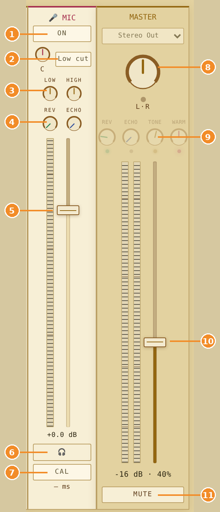
- ON ① zet de microfoon aan; de eerste keer vraagt de browser toestemming. Low cut ② haalt het gedreun van de lage tonen weg (onder 90 Hz), LOW en HIGH ③ zetten lage en hoge tonen hoger of lager, en REV en ECHO ④ geven hem zaal en echo.
- 🎧 ⑥ laat je jezelf horen terwijl je speelt, alleen met een koptelefoon: met luidsprekers hoort de microfoon zichzelf en fluit hij. CAL ⑦ meet hoe lang je klank erover doet om terug te komen, zodat de opname gelijk uitkomt. Hoe je jezelf opneemt met de begeleiding: MIC en ⏺ REC.
- L·R ⑧ is de balans van de luidsprekers, en REV · ECHO · TONE · WARM ⑨ zijn dezelfde draaiknoppen als op het Keyboard: wat je hier verschuift, schuift daar mee.
- De gouden fader ⑩ is het totale volume van de suite; ook de opnamen van ⬤ wav komen op dat niveau uit. MUTE ⑪ zet alles stil.
Zo weet je dat het gelukt is: als je de gouden fader hoger zet, wordt alles wat klinkt luider, en het getal eronder verandert.
MIC: ① ON · ② pan en Low cut · ③ lage en hoge tonen · ④ galm en echo · ⑤ volume · ⑥ koptelefoon · ⑦ CAL — MASTER: ⑧ L·R · ⑨ REV, ECHO, TONE, WARM · ⑩ totaal volume · ⑪ MUTE.
Het transport · spelen en verspringen vanuit de Console
De onderste balk bedient het stuk van het Score op afstand, zonder naar zijn venster te gaan.

- ⏮ ⏪ ① gaan naar de eerste maat of de vorige, en ⏩ ⏭ ④ naar de volgende of de laatste. ▶ ⏸ ⏹ ② spelen af, pauzeren en stoppen.
- ⏺ ③ telt 3 · 2 · 1 en neemt je met de microfoon op over de begeleiding, in een WAV; ⏹ stopt en bewaart.
- GO ⑥: typ een maatnummer en druk op Enter.
- LOOP ⑦: ◉ neemt de maat waar het stuk is, voor A (waar hij begint) en voor B (waar hij eindigt); 🔁 zet de lus aan of uit en ✕ wist hem. Het is dezelfde lus als in de partituur.
- TIME ⑤ en MEASURE · BEAT · BPM ⑧ tonen waar het stuk is en in welk tempo.
Zo weet je dat het gelukt is: als je hier op ▶ drukt, begint het stuk te spelen in het Score en loopt TIME verder.
Licht, thema's en navigatie
Zon/maan regelt de helderheid (dubbelklik = normaal). Vier thema's, gedeeld door de hele suite. De ⊞-knoppen openen de andere apps, blijven verlicht zolang die open zijn, en een klik brengt ze naar voren.
Schermgrootte
Alles past het best met Chrome op 90% en de Score op 80% (de zoom van de Score zit in zijn werkbalk). Om Chrome op 90% te zetten, klik je in de app en druk je één keer op Ctrl − (Ctrl 0 gaat terug naar 100%); het werkt ook in de vensters die de Keyboard opent, zelfs zonder menu. Chrome onthoudt het voor de hele site: doe het één keer op je computer en één keer op musicmotionsuite.com. In de Console draait Ctrl + muiswiel boven een knop de knop (het volume), niet de zoom; gebruik het toetsenbord of houd de aanwijzer weg van de knoppen.
De testbank voor klankkleur en register. De stapsgewijze handleiding („hoe je hem gebruikt”) staat op zijn pagina.
De raadgever.
Hij vergezelt je terwijl je schrijft — alleen als je dat wilt. Hij spreekt op het juiste moment, precies waar je aan het werk bent, en bewaart de lange uitleg voor wanneer je erom vraagt.
De Coach openen · het oor 🎓 en de knop ⊞ coach
De Coach heeft twee delen: het berichtje, dat verschijnt waar je aan het werk bent, en het Coach-venster, waar je rustig leest. Je bedient ze allebei vanuit de bovenste balk van elke app.
Om hem te openen: druk op ⊞ coach ② in de bovenste balk van de Score, het Keyboard, de Console of de Player. Het Coach-venster opent apart.

- Het oor 🎓 ①: één klik maakt het wakker of laat het slapen. Wakker klopt het zacht in violet: de Coach luistert en meldt je dingen. In slaap zegt hij niets. Wat je in één app kiest, geldt voor alle.
- ⊞ coach ②: opent het Coach-venster, met zijn tabbladen (zie Het Coach-venster).
Zo weet je dat het gelukt is: het oor klopt in violet en het Coach-venster opent met de begroeting van de Coach.
Wie je begeleidt en de taal · rechtsklik op 🎓
Een rechtsklik op het oor 🎓 opent een kort menu met twee dingen: wie je begeleidt en in welke taal de hele suite spreekt.
Om het te openen: rechtsklik op 🎓 ①.
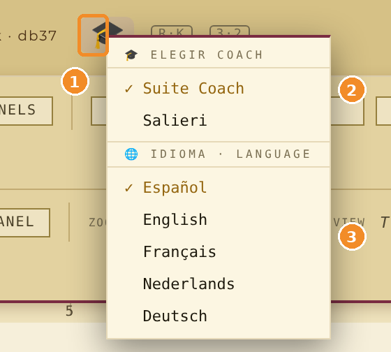
- COACH KIEZEN ②: de Suite Coach is geduldig en begeleidt je stap voor stap, ook als je geen muziek kent. Salieri is de veeleisende meester, voor wie al weet (zie Gevorderde studie).
- TAAL ③: Español, English, Français, Nederlands of Deutsch. Ze geldt voor alle apps, en de ? openen de handleiding in die taal.
Zo weet je dat het gelukt is: het vinkje ✓ blijft staan bij wat je koos, en de teksten van de apps veranderen van taal.
Al de rest, op de Coach-pagina
Het Coach-venster en zijn tabbladen, wat de Coach je meldt terwijl je schrijft, het compositiespel van Niveau 1 en de gevorderde studie — contrapunt, harmonie, orkestratie en compositie — staan op de Coach-pagina, die groeit met elke versie.
Het instrument.
De enige klankmotor van de suite: alles wat je hoort, klinkt hier. Vijfendertig toonhoogtes per octaaf, zuivere pythagorese stemming, en een getempereerde strook op elke toets om het verschil te horen.
Hoe het Keyboard stemt · SYSTEM, KEY, MODE en SENS
De eerste rij knoppen bepaalt hoe elke toets klinkt: in welke stemming, en in welke toonsoort.
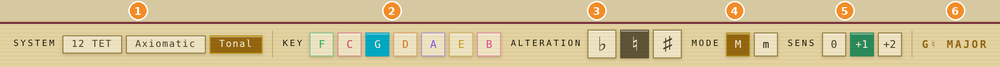
- SYSTEM ① kiest tussen drie manieren van spelen. 12 TET is de gewone getemperde piano, en klinkt op de cyaanblauwe strepen van de toetsen. Axiomatic is de zuivere pythagorische stemming: elke toets bij zijn naam. Tonal speelt per trap van een toonsoort: wie geen piano kan spelen, speelt en componeert juist in elke toonsoort.
- KEY ② en ALTERATION ③ kiezen de grondtoon: Sol en ♮ is Sol, Si en ♭ is Si♭. Ze gaan alleen aan in Tonal.
- MODE ④: M is groot en m klein.
- SENS ⑤ is hoeveel de leidtoon stijgt, de noot die naar de grondtoon «trekt»: 0 helemaal niet, +1 normaal (daar begint hij) en +2 een sterker effect, ook op de chromatische noten.
- Het label ⑥ zegt waar je bent: AXIOMATIC, of de toonsoort, zoals G♮ MAJOR.
De toetsen van je computer spelen ook: welke toets welke noot geeft in elk systeem, staat in de sneltoetsen van het Keyboard.
Zo weet je dat het gelukt is: het label ⑥ toont wat je koos, en in Tonal speelt de onderste rij van het computertoetsenbord (Z X C V B N M) de toonladder van die toonsoort.
Acord Lab — akkoorden horen met de muis
Met de linkermuisknop speel je een noot. Een rechtermuisklik op het klavier zet het aanhouden aan: de noot die je speelt blijft klinken met zijn lampje aan, en elke noot die je daarna met de linkerknop speelt, komt erbij. Zo hoor je het hele akkoord zonder meerdere toetsen ingedrukt te houden. Nog een rechtermuisklik zet alles uit.
Zo weet je dat het gelukt is: de toetsen van het akkoord blijven verlicht en klinken samen.
De HiFi-uitgang · het volume en de kleur van de klank
Op de tweede rij zes draaiknoppen. Je draait ze door naar boven of naar beneden te slepen, en met een dubbelklik gaan ze terug naar neutraal. Het lampje ernaast gaat aan als de knop in gebruik is.

- VOL ①: het volume van wat je op het klavier speelt. Het Score heeft zijn eigen volume, en het totaal is de MASTER van de Console.
- REV ②: de galm, alsof je in een grote zaal speelt.
- ECHO ③: de echo, de noot die zich steeds zachter herhaalt. Hij begint uit.
- TONE ④: donkerder of helderder.
- WARM ⑤: warmer, met wat meer boventonen.
- BAL ⑥: de balans, meer naar links of meer naar rechts.
VOL is alleen voor het klavier; de andere vijf veranderen alles wat je hoort, ook het Score, en het zijn dezelfde als in de Console: verschuif je er hier een, dan schuift hij daar mee.
Zo weet je dat het gelukt is: als je aan de knop draait, verandert de klank en gaat het lampje aan; met een dubbelklik staat hij weer zoals eerst.
Opnemen en de opnamekoffer
Het Keyboard neemt op wat je speelt en bewaart het zodat je het later kunt horen. Het bewaart elke noot met zijn exacte stemming, zonder MIDI en zonder kwantisering: wat terugklinkt is precies wat je speelde.
Om op te nemen: druk op ⏺ ① in de balk Rec, speel, en druk op ⏹ om te stoppen. ▶ ② speelt de opname af en pauzeert haar als je opnieuw drukt; ⏪ en ⏩ springen tien seconden terug of vooruit, en de klok toont de tijd tot op de milliseconde (00.00.000).
Om de koffer te openen: druk op ☰ recs ③, naast ♩ pulse en ⊕ FX.

- load mmf en load mid ④ halen een opname van je computer. MIDI komt binnen als een getemperde laag, in cyaan.
- De nieuwe opname ⑤ verschijnt bovenaan, binnen handbereik: keep in list bewaart haar in de lijst en save as .mmf downloadt haar als bestand.
- De lijst ⑦: typ over de naam om hem te veranderen; ▶ speelt haar af, ⬇ bewaart haar als .mmf en ✕ wist haar.
- Onderaan de koffer staan de demo’s van Bartók en Bach, om uit te proberen.
PLAYBACK TEMPO ⑥ verandert de snelheid waarmee een opname klinkt, zonder de noten te veranderen: ze blijven even zuiver, alleen langzamer of sneller. Sleep de draaiknop naar beneden om langzamer te gaan, tot ×0.50 (de helft), of naar boven om sneller te gaan, tot ×2.00 (het dubbele). Met Shift beweegt hij fijn, en met een dubbelklik gaat hij terug naar ×1.00, de oorspronkelijke snelheid.

Het is handig voor twee dingen: een moeilijke passage langzaam opnemen en op tempo horen, of een stuk langzaam beluisteren om elke noot te volgen. Het geldt voor de ▶ van elke opname in de koffer, ook de .mmf- en .mid-bestanden die je laadt. Als je op ▶ drukt, gaat de koffer dicht; wil je de snelheid veranderen terwijl het speelt, open hem dan opnieuw met ☰ recs, beweeg de draaiknop en laat los: het stuk gaat verder waar het was, op de nieuwe snelheid.
Als je naar een andere dans springt, komt het klavier binnen gestemd in de toonsoort van dat stuk. En je kunt opnemen terwijl het Score speelt: de opname komt er schoon uit, alleen met wat jij speelde. Om de klank als audiobestand te bewaren, gebruik je ⬤ wav.
Zo weet je dat het gelukt is: na ⏹ verschijnt „NEW RECORDING READY”, en met ▶ hoor je wat je speelde. Met de draaiknop op ×0.50 klinkt het op halve snelheid, met dezelfde stemming.
♩ Pulse — de metronoom van het Keyboard
Het Keyboard heeft een eigen metronoom, uitgebreider dan die van het Score: hier kies je zelf het tempo, en je kunt een klik horen naast het lampje.
Om hem te openen: druk op ♩ pulse ① in de balk van het Keyboard.

- Het lampje ② knippert op de puls, en ▶ start ③ zet het aan en uit.
- tap ④: druk een paar keer op deze knop, in het tempo dat je in je hoofd hebt, en de metronoom neemt dat tempo over. De tikken moeten elkaar snel opvolgen: als er meer dan 2 seconden voorbijgaan, begint hij opnieuw te tellen.
- BPM ⑤: de draaiknop en het getal; BPM betekent slagen per minuut.
- Het menu ⑥: de klassieke tempi, van Largo · 50 tot Presto · 184. De draaiknop, het menu en tap horen bij elkaar: verander je er één, dan bewegen de andere mee.
- click ⑦ zet het geluid aan; het begint uit, alleen met het lampje. De draaiknop ernaast is het volume, en tone ⑧ de toon van de klik, lager of hoger.
Met de ⊗ vastgezet blijft de metronoom lopen, ook als je iets anders doet; niet vastgezet stopt hij als je hem sluit, zodat er niets per ongeluk blijft klinken. En hij slaat mee met het stuk: als er een .mmf uit de koffer of het Score speelt —ook in een A–B-lus—, volgt het lampje de maat en toont het getal het tempo van dat stuk. Het stuk heeft het laatste woord: als zijn puls begint, stopt de vrije metronoom vanzelf.
Zo weet je dat het gelukt is: het lampje knippert op het tempo dat je koos, en met click aan hoor je het. De PULSE van het Score is een andere: alleen licht, met het tempo van de partituur (zie de Pulse van het Score).
De noot en de horizon · wat er klinkt
Onder het instrument vertelt het Keyboard je welke noot je net speelde.

- De noot ①: haar naam en haar octaaf, zoals F♯ 3.
- De frequentie ②: hoeveel trillingen per seconde (Hz) ze heeft, precies, en in welk systeem je zit.
- De horizon ③, zoals die van een vliegtuig: met de lijn in het midden staat de noot op haar pythagorische plaats; hij stijgt als de noot omhoog trekt (de leidtoon) en zakt als ze omlaag trekt.
The horizon only marks in Tonal, where the notes have a role inside the key. In Axiomatic the line always stays in the centre. The Score’s keyboard has the same horizon, to the right of the keys, and it follows the same rule.
Zo weet je dat het gelukt is: als je in Tonal de leidtoon speelt —Fa♯ in Sol groot—, stijgt de lijn van de horizon.
Instrument — hoe de toetsen van het Keyboard klinken
Het Keyboard laat de hele suite klinken: ook het Score klinkt via het Keyboard. Instrument kiest hoe de toetsen klinken als jij ze speelt, met de muis of met het toetsenbord van de computer: piano, viool, fluit…
Om het te openen: druk op het veld Instrument ①, op de tweede regel van de balk. De lijst met alle instrumenten gaat open.

- filter ②: typ een paar letters („vio”, „flu”) en alleen de instrumenten met die letters in hun naam blijven over.
- De families ③: elke kolom groepeert gelijksoortige instrumenten: houtblazers, koperblazers, slagwerk, strijkers, stemmen…
- Klik op een instrument ④ en het is gekozen: de lijst sluit en het veld toont de naam. Het instrument dat klinkt, is gemarkeerd met een streepje links.
Wat je hier kiest, verandert de partituur niet. Als het Score speelt, komt elke noot bij het Keyboard aan met het instrument van zijn kanaal, en dat is wat je hoort (zie Het instrument van een kanaal). Bijvoorbeeld: je zet hier Violin en drukt op ▶ bij een stuk voor piano. Je hoort de piano, en als je er met de toetsen overheen speelt, klinkt dat als een viool. Je keuze wordt ook doorgegeven aan het Register, dat hetzelfde instrument laadt.
Zo weet je dat het gelukt is: het veld toont de naam die je koos, en als je een toets speelt, hoor je dat instrument.
A= · de referentietoonhoogte van de hele suite
De stemtoon is de La waarop alles gestemd wordt. Vandaag is dat bijna altijd 440 Hz, maar in andere tijden en orkesten lag hij lager of hoger.
Om het te openen: druk op A= 440 ①, rechtsboven. Tuning Reference gaat open.

- De zes stemtonen ②, met één klik: 415 barok, 430 klassiek, 432 natuurlijk, 440 modern, 442 helder en 466 renaissance.
- fine ③: voor een exacte waarde, van 380 tot 480 Hz, per halve hertz.
Als je de La verandert, wordt de muziek niet getransponeerd: het hele stuk klinkt iets lager of hoger, en de intervallen blijven dezelfde. Het is dezelfde A= als in het Score: je kunt een stuk laten spelen in het Score en hier, terwijl je luistert, de stemtoon van je instrument of je orkest zoeken. Als je daarna vanuit het Score opslaat, onthoudt het .mmf hem. De Pythagorean Tuner heeft zijn eigen regeling (Reference pitch A4): stem je je instrument daarmee op 442, zet dan hier ook 442. Meer in de veelgestelde vragen.
Zo weet je dat het gelukt is: de knop toont de nieuwe La (bijvoorbeeld A= 415), en de volgende noot die je speelt, klinkt er al mee.
Octaven en paniek
- OCTAVE SHIFT, onderaan het scherm (◀ ▶, of de pijltjes ← → van het computertoetsenbord), schuift de toetsen een octaaf lager of hoger, zonder je hand te verplaatsen.
- Escape (the Esc key) cuts all the sound at once. Use it if a note is left sounding. It also works from the Score, with the piece stopped.
- In Tonal stemmen ↑ en ↓ de noot die je aanhoudt hoger of lager, live.
- De computertoetsen tellen volgens hun plaats, niet volgens hun letter: op een AZERTY- of QWERTZ-toetsenbord klinkt de toets die op dezelfde plek staat als op QWERTY.
Zo weet je dat het gelukt is: als je op ▶ drukt, verandert het getal van OCTAVE SHIFT en klinkt dezelfde toets een octaaf hoger.
De toonsoort van het Keyboard volgt het stuk
Als er een stuk speelt vanuit het Score of vanuit de koffer, verandert het Keyboard vanzelf van toonsoort om mee te spelen, en het label bovenaan zegt welke het is. Heeft het stuk meerdere delen in verschillende toonsoorten, dan verandert het bij de overgang van het ene naar het andere.
Een detail: de partituur geeft alleen de voortekening, en dezelfde voortekening hoort bij twee toonsoorten (Si♭ groot en sol klein hebben dezelfde mollen). Zegt het stuk niet welke het is, dan neemt het Keyboard de grote. De stukken van de suite met hun fiche die de toonsoort van elk deel geeft, tonen de juiste toonsoort, zoals «fa klein».
Zo weet je dat het gelukt is: terwijl het stuk speelt, verandert het label van de toonsoort als het deel verandert.
⬤ wav — wat je hoort als audio bewaren
⬤ wav bewaart alles wat er in de suite klinkt in een audiobestand (.wav): wat je op het Keyboard speelt, een opname uit de koffer of een stuk uit het Score. Het bestand gaat open op elke computer of telefoon, en je kunt het doorsturen of bewaren als herinnering aan een les.
Om op te nemen: speel eerst een noot, want de audio moet lopen (anders vraagt het Keyboard het je). De knop staat naast ♩ pulse, ⊕ FX en ☰ recs.

- Druk op ⬤ wav ①. Vanaf dat moment neemt hij alles op wat klinkt.
- Speel, of laat een opname of het stuk klinken. De knop ② wordt rood en telt de seconden.
- Druk opnieuw op de knop om te stoppen. Het bestand wordt vanzelf gedownload in de downloadmap van je browser (Downloads), met een naam als mm-capture-153012.wav: het uur waarop je stopte.
Hij neemt op wat je hoort, zoals je het hoort. Als je iets verschuift in de Console terwijl hij opneemt —de MASTER, de faders, de pan, de galm—, komt dat in het bestand; staat de MASTER op 20 %, dan komt het bestand uit op 20 %. Zet het volume vóór de opname zoals je het wilt horen.
Vanuit het Score doe je hetzelfde met File → SAVE AS WAV: het speelt het stuk, of het stuk dat met SELECT is gemarkeerd, en downloadt het bestand met de naam van het stuk.
Voor wie het wil weten: het is geen mix die achteraf wordt berekend, maar wat op dat moment naar de luidsprekers gaat, in stereo en op 24 bit. Daarom bewaart hij ook een klik of een kras, als die er was.
Zo weet je dat het gelukt is: tijdens de opname is de knop rood en lopen de seconden op; als je stopt, verschijnt het .wav-bestand in Downloads, en als je het opent, hoor je wat er klonk.
⊕ FX · galm, echo, porta en rotary voor wat je speelt
Om het te openen: druk op ⊕ FX ①, naast ♩ pulse. Bovenaan staat het instrument van het kanaal waarop je speelt: de effecten horen bij dat kanaal.

- Reverb ②: de galm van een grote zaal.
- Echo wet ③: hoeveel echo je hoort; Echo fb ④: hoe vaak hij zich herhaalt; Echo time ⑤: hoe lang elke herhaling duurt, in milliseconden.
- Porta ⑥: de noot glijdt naar de volgende, zoals een viool of een stem.
- Rotary ⑦: de draaiende luidspreker van het jazzorgel. Op 0 staat hij uit; als je eraan draait, gaat hij van traag naar snel. Dubbelklik: Off.
Deze effecten veranderen alleen wat je live speelt. Wil je dat de partituur met galm of echo klinkt, dan schrijf je ze in het Score, in zijn eigen Sound FX (zie Sound FX). En ze zijn niet hetzelfde als REV en ECHO op de balk, die gelden voor alles wat klinkt. Het popup blijft open (⊗) tot je het sluit, en je sleept het aan zijn kop.
Zo weet je dat het gelukt is: als je speelt met Reverb of Echo wet hoger, hoor je de zaal of de echo; de partituur verandert niet als ze speelt.
De partituur.
Je schrijft muziek per kanaal met het mini-keyboard in de TODAL-modus: je speelt op de toontrappen. Zelf maakt het geen klank — die komt van het Keyboard.
Zie de curve voordat je ze hoort · Peak/Valley · Mirror · de adem
Zowel de boogeditor als de editor van het nootteken tonen nu een live tekening van de curve van het gebaar, tussen twee lijnen: Peak (het volste) bovenaan en Valley (het zwakste) onderaan. Het verloop gaat van teal (vol) naar goud (zwak), zoals op de notenbalk. Als de boog nog geen eigen Peak/Valley heeft, wordt de curve gestippeld getekend met een label „auto”: ze toont je de diepte die het programma zelf kiest. De vorm is een vloeiende curve (een messa is een afgeronde bult, geen driehoek). Peak en Valley zijn relatief tot de dynamiek, geen vaste niveaus: een > vanuit mf en een > vanuit ff zijn niet hetzelfde — de dynamiek bepaalt, en het gebaar springt nooit naar een absoluut niveau. De adem: de grootte van de zwelling wordt gemeten aan de echte seconden van de frase en aan hoeveel lucht de dynamiek meedraagt, zodat een korte, snelle boog niet „pompt” en een mf over een lange frase vol blijft. De Mirror van de boogeditor draait nu ook de vorm om (openbloeien ↔ wegsterven, messa ↔ omgekeerd), bovenop de kant van de boog en de hoogte.
Wat het gebaar van de legatoboog is. Hetzelfde idee als het gebaar van de noot, maar over de hele frase: de curve loopt van de eerste noot van de boog tot de laatste, en elke noot krijgt het niveau dat op haar plaats valt. De vormen zijn dezelfde; sost houdt de frase gelijk. nun en unu zijn geen curves: ze markeren de aanslag van elk paar noten en laten het niveau vlak. Wil je daarnaast dat één noot van de boog iets eigens doet, geef haar dan haar notengebaar: de twee tellen op.
Schrijf het in je eigen taal · het ? van het woord en de koppeling
De inkt is van jou: het tekstveld in de pop-up EXPR filtert niets en neemt het woord aan in welke taal je het ook schrijft, en dat is de regel van het papier. Wat klinkt, is iets anders — de motor herleidt het tot een canonieke term, en daarom klonken doux, zart en sanft al als dolce zonder dat de partituur een letter veranderde.
Nu kun je dat met elk woord doen, en je ziet het vóór het invoegen. Naast de blauwe voorbeeldregel staat een ?: die vertelt je wat dat woord doet — het lemma waartoe het herleid wordt, de groep (klank · tempo · dynamiek · instrument), de as als die er is, en de State. Niet meer invoegen, kijken en wissen.
En als de State silent zegt, verschijnt er een rij eronder: behaves like — kies de term waarop het lijkt en vanaf dan klinkt jouw woord zoals die term, met de inkt onaangeroerd. De familie kies je niet: die volgt uit de term die je koos. Mit Schwung gekoppeld aan dolce geeft «Lemma dolce (mit schwung) · Group sound · Axis IN».
De koppeling leeft in drie lagen, en de dichtstbijzijnde wint. Het stuk: ze reist mee in het .mmf-bestand, zodat het bestand op de computer van een ander hetzelfde klinkt. Je woordenboek: het vinkje «and in my other pieces» bewaart haar op deze computer en geldt voor alles wat je opent; als je het uitvinkt, verdwijnt ze daar en blijft ze alleen in het stuk. En het lexicon van de suite, dat de bodem vormt en niet vanuit de app wordt geschreven.
Frase-agogiek (ASYM AGOG): de solist speelt, het raster blijft staan
De agogiek die je al kende, buigt één noot. Deze geeft vorm aan de tijd van een heel traject: in de SELECT-modus sluit je een selectie over een kanaal, klik je met rechts en kies je ⌘ ASYM AGOG. Binnen de regio lopen de inzetten van dat kanaal voor en houden ze in, terwijl de begeleiding op haar raster blijft — aan het tempo wordt nooit geraakt, en een kanaal zonder regio verschuift geen microseconde. Het is rubato in de oude betekenis: de harp die onverbiddelijk doorgaat en de bas die met de frase speelt. Je kiest een van vier fasen, die de vorm van de curve zijn —Inhale neemt adem bij het binnenkomen en keert terug · Move duwt door het midden en betaalt aan het eind terug · Arrive neemt van het midden en verbreedt het doel · Exhale ontspant na het hoogtepunt—, plus Flat, dat geen curve is maar het raster zelf: de lijn staat op nul en je hoort alleen wat je met de hand verschuift, en zo schrijf je een wals. π⁻¹ spiegelt de curve. Met elk van de eerste vier verlaat de frase het raster en keert ze erop terug: ze begint en eindigt op nul.
De AXIS van de regio zegt wat die curve doseert, en dat zijn drie verschillende dingen aan één noot: Tempo, wanneer ze inzet; Pres, waarmee ze inzet —de aanwezigheid van de aanzet—; en ART, hoe lang ze duurt en met hoeveel gewicht. Elke as bewaart haar eigen curve over hetzelfde traject, en de kleur van de strook zegt naar welke je kijkt: limoen, teal, lavendel.
In de tekening van de pop-up is elk punt een noot: sleep er een en je past alleen die noot aan, met de fase intact. De pijltjes lopen van noot naar noot en de +/− stellen fijn bij; op de ART-as zijn de holle punten noten zonder geschreven articulatie, waar niets te schalen valt. De kanaalchips zeggen wie ze bereikt —een frase die beide violen spelen, is één regio die beide bereikt— en zodra de regio een naam heeft, wordt ze een patroon: je brengt het naar een ander traject met Take · van M tot M, en je verbergt of wist alle regio's met die naam in één keer.
INT zegt hoeveel, als fractie van een tel en niet van de noot — zodat een halve noot en een achtste in dezelfde passage vergelijkbaar verschuiven, en zo voelt het ook. Subtle duidt nauwelijks aan; Expressive is de middenweg; Extreme klinkt als een vrijheid. De regio verschuift alleen: het raster blijft staan, het traject duurt precies wat er geschreven staat en de frase haakt vanzelf weer aan, dus het werkt ook terwijl het orkest speelt. Waar je al een agogisch teken per noot plaatste, wint dat; en binnen de regio zwijgt de auto-agogiek, omdat je het daar zelf hebt aangegeven. De knop ? van de pop-up opent de hele uitleg in de taal die je hebt ingesteld. En vanaf vandaag reist de regio mee in de .mmf: vroeger leefde ze alleen in het tabblad en ging ze verloren bij het herladen.
De wijzigingen van elke versie — wat nieuw is en wat verbeterd werd — staan apart, op de pagina Wat is er nieuw.
De volledige rondleiding langs de functies staat op de eigen pagina.
Wat de partituur omringt.
Boven staat wat voor de hele suite geldt: het thema, het licht van het scherm, het hoofdvolume en hoe transponerende instrumenten gelezen worden. Onder het transport en de vier getallen die je kunt veranderen. En daartussen de partituur, met haar muis- en toetsenbordgebaren — die niemand raadt en die het hele verschil maken.
Op de bovenste balk
De vier thema's · en ze horen bij de hele suite
De vier cirkels op de balk zijn Dark, Gray, Clear en High Contrast. De keuze hoort niet bij de Score: ze wordt op één plek bewaard en elke app neemt ze over, zodat het Keyboard, de Console en de Player opkomen in het thema dat je hier koos. Clear is het thema voor daglicht of om je scherm aan iemand te tonen; High Contrast is er om moeiteloos te lezen.
De helderheidsknop · het scherm in deze kamer
Hij verandert het thema niet: hij past het scherm aan bovenop het thema dat je al hebt. Je sleept hem ↕, het scrollwiel verplaatst hem in stappen, en een dubbelklik zet hem terug op nul. In de donkere thema's verheldert hij —het pictogram wordt een zon— en in het lichte thema verdonkert hij —een maansikkel—, omdat het probleem in elk geval het omgekeerde is. Hij reist met je mee: verplaats hem in de Score en het Keyboard past zich meteen aan.
De Vol op de balk is het volume van wat de Score verstuurt
Het is niet het volume van één kanaal, en ook niet het hoofdvolume: het is het volume van wat de Score verstuurt om gespeeld te worden. Je sleept het ↕ of verandert het met het scrollwiel, en het begint op 40 %. Het is goed om te weten waarom: de Score heeft geen klank — hij verstuurt de waarde en het Cosmic Keyboard, dat de motor is, past ze toe op de noten die van de Score komen. Er zijn drie volumeknoppen in de suite en elk heeft zijn eigen terrein: deze de Score, de Keyboard VOL wat je op de toetsen speelt, en de Console MASTER het geheel (en dat is wat SAVE AS WAV opneemt). Zo kun je, terwijl de Score speelt, de Score zachter zetten en er met het keyboard op vol volume overheen repeteren, of andersom. Het volume van één kanaal staat op de kaart van het actieve kanaal en in de Console.
WRITTEN · CONCERT · de partij lezen, of het stuk lezen
Dit is de schakelaar voor transponerende instrumenten, en hij verandert alleen wat er getekend wordt: geen enkele noot verschuift, en de klank verandert niet. In WRITTEN —zo opent de Score— wordt elk transponerend kanaal op zijn genoteerde toonhoogte getoond, en zijn voortekening verschuift met hetzelfde interval: de hoorn in F toont zijn kruisen, zoals op de lessenaar van de hoornist. Eén klik en het wordt CONCERT, waarbij de knop zich wijnrood vult: alles wordt getekend op klinkende hoogte, en zo moet je ernaar kijken om een harmonie te controleren. Het interval komt van het instrument van het kanaal —piccolo een octaaf, klarinet een toon, hoorn een kwint, contrabas en gitaar een octaaf, glockenspiel twee— dus in violen, altviolen en cello's verschuift er niets, en een kanaal zonder instrument verschuift ook niet.
Het blad — eraan werken, of het op papier krijgen.
📄 PAGE / ▦ SCROLL · de strook of het blad
Het Score toont je de muziek op twee manieren. In SCROLL is het een lange strook die naar rechts loopt: de handigste om in te schrijven. In PAGE zie je haar op bladen, zoals ze afgedrukt wordt, en daar beslis je hoe ze over de pagina’s verdeeld wordt.
Om het te openen: druk op 📄 PAGE ①. Dezelfde knop zegt dan ▦ SCROLL: druk erop om terug te gaan naar de strook. De strook verandert niet: ze wacht op je zoals ze was.

- De weergave ②: Full page (het hele blad), Fit width (op de breedte van het scherm) of Side by side (twee bladen, zoals een open boek).
- Bars/sys ③: hoeveel maten er op elke regel passen (in muziek een systeem). Auto past ze aan de breedte aan; of je kiest van 1 tot 9.
- Staff ④: de grootte van de notenbalk, in millimeter papier, van 3 tot 9. Voor een partij die je op de lessenaar speelt 7 mm; voor een partituur met veel instrumenten 4 of 5.
- Gap ⑤: de ruimte tussen de ene regel en de volgende.
- Pages ⑥: op hoeveel bladen je het stuk wilt. Het Score schikt het vanzelf; past het niet, dan zegt het je wat het kleinst mogelijke aantal is.
Op het blad werk je gewoon verder: een klik plaatst de cursor of selecteert een noot, noten en markeringen versleep je, je selecteert een gebied, en de rechtermuisklik opent dezelfde menu’s als op de strook. Als je op ▶ drukt, lichten de klinkende noten op het blad op. Zoomen gaat met Ctrl + scrollwiel. Om veel te schrijven is de strook handiger.
Deze instellingen worden met het stuk bewaard en zijn dezelfde als op het afdrukblad (PRINT / PDF): wat je hier schikt, komt zo op papier. Heeft een regel een maat te veel of te weinig, dan kun je met een rechtermuisklik op die regel hem verschuiven of er een maat aan doorgeven (zie ⠿ Systeem).
Zo weet je dat het gelukt is: je ziet het stuk op witte bladen, zoals een boek, en als je ③ of ⑥ verandert, wordt het blad meteen opnieuw geschikt.
🖨 PRINT / PDF · de partituur afdrukken of als PDF bewaren
Om het te openen: druk op MENU FILES ① en daarna op 🖨 PRINT / PDF ②. Het afdrukblad gaat open: de pagina’s zoals ze eruit zullen komen, met hun instellingenbalk bovenaan.


- Show ③: Full score, de volledige partituur, of Selected CH, alleen de gekozen kanalen (de partij van één instrument; zie verder).
- Paper ④: A4, Letter of A3.
- Bars/system, Staff mm, Sys gap en Pages ⑤: dezelfde instellingen als in PAGE, en ze horen bij elkaar: wat je hier verandert, verandert daar ook.
- Print / PDF ⑥ opent het afdrukvenster van je browser. Kies je printer, of kies bij Destination voor Save as PDF om een PDF-bestand te bewaren.
- Close ⑦ gaat terug naar de partituur.
- PAGE HEADER · print only ⑧: de titel, de ondertitel, de componist, de naam van de partij en het ©, elk met zijn grootte. Ze veranderen alleen het papier: laat je een veld leeg, dan wordt dat van Score Info gebruikt. Op pagina 1 kun je de kop met de muis vastpakken en verschuiven.
Wat je op het afdrukblad ziet, komt eruit: zonder de cyaanblauwe selectie, zonder de knoppen en zonder verborgen noten. Onder de balk zetten Footer en Page # de voettekst en het paginanummer aan of uit.
Heb je het stuk vanuit een les geopend, in demomodus, dan gaat het sneller: de knop 🖨 PRINT bovenaan, naast de titel, maakt het blad klaar en opent meteen het afdrukvenster.
Zo weet je dat het gelukt is: het afdrukvenster van de browser gaat open met je bladen; met Save as PDF komt het bestand in Downloads.
En de partij van een instrument komt uit het Panel
De 🖨 PRINT VIEW van het Panel opent datzelfde afdrukblad, maar met Show al ingesteld op “selected channels”: die op je chips. Het is de korte weg naar partijen — kies het instrument in het Panel, druk op PRINT VIEW en druk af. Vanuit MENU FILES kun je hetzelfde doen door Show met de hand te veranderen.
De onderste balk — het transport en de getallen van het stuk.
De onderste balk · wat hij je vertelt en wat je kunt veranderen
Helemaal onderaan staat de transportbalk. Hij vertelt je waar je in het stuk bent, terwijl je schrijft en terwijl het speelt.
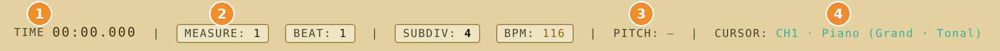
Een eenvoudige regel om hem te lezen: wat in een kadertje staat, verander je met een klik; wat geen kadertje heeft, geeft alleen informatie.
- TIME ①: hoeveel tijd er verstreken is sinds het begin, in minuten, seconden en duizendsten.
- MEASURE · BEAT · SUBDIV · BPM ②: de maat, de tel binnen de maat, de grootte van de cursorstap en de snelheid. Ze hebben een kadertje: je kunt ze veranderen. Hoe, lees je in de vier chips.
- PITCH ③: de toonhoogte van de laatste toets die je speelde.
- CURSOR ④: op welk instrument de cursor staat.
Zo weet je dat het gelukt is: druk op ▶ en kijk naar TIME: de cijfers lopen. Terwijl het stuk speelt, verschijnt ernaast TOTAL: hoe lang het hele stuk duurt.
De vier chips · MEASURE, BEAT, SUBDIV, BPM
MEASURE en BEAT dienen om te gaan: een klik maakt er een vakje van, je typt het getal en Enter brengt de cursor erheen (Esc annuleert). Met nummering per deel zegt MEASURE ook in welk deel je bent en welke maat dat daarbinnen is. SUBDIV heeft een eigen ingang, net hieronder: het is de stap van de cursor. BPM is niet het tempo van het stuk: het is het tempo dat geldt in de maat waar je bent, dus het verandert vanzelf wanneer je een tempowisseling passeert; één klik en je typt het, tussen 20 en 320.
SUBDIV · van 1 tot 8, en het is de stap waarmee de cursor loopt
Het is het nuttigste getal op de balk en het minst begrepen. SUBDIV verdeelt de tel in 1 tot 8 delen —1 de kwartnoot, 2 de achtste, 3 de achtstetriool, 4 de zestiende, enzovoort tot de tweeëndertigste— en daaruit komt alles wat in stappen beweegt: de pijltjestoetsen ← → verplaatsen de cursor precies één van die stappen, wat je sleept, valt bij het loslaten op dat raster, de selectie die je verplaatst, klikt erop vast, en het lampje PULSE slaat mee en noemt je de waarde. Wil je buiten de tel schrijven, dan zet SUBDIV 2 de cursor met één pijltje in het midden van de tel; voor een triool, 3. Je zet 3 voor wat in 2 niet bestaat: het binaire en het ternaire raster zijn niet hetzelfde, en de chip kiest in welk van de twee je zit. Bij het openen van een stuk leidt de Score het af uit de muziek —de fijnste verdeling die verklaart wat er geschreven staat, nooit minder dan 2, zodat je altijd buiten de tel kunt binnenkomen— en zegt hij je of er een noot buiten dat raster viel, zonder iets aan te raken. De maatsoort veranderen stelt het opnieuw in. En het heeft niets te maken met de onderverdeling van de agogiek, die iets anders is en in haar eigen pop-up zit.
De drie die alleen informeren · TIME, PITCH, CURSOR
TIME is waar de naald staat, in minuten en duizendsten; bij het afspelen verschijnt TOTAL ernaast, de duur van het uitgevouwen stuk — met zijn herhalingen, niet de telling op papier. PITCH is de pythagorese toonhoogte van de laatste toets die je speelde, met haar afwijking: het venstertje waardoor de echte stemming zichtbaar wordt. CURSOR zegt waar je schrijft: kanaal, instrument en afkorting, of het hele orkest als de cursor op ALL staat.
De knoppen om te luisteren · spelen, stoppen en verplaatsen
Links op de onderste balk staan de knoppen om naar het stuk te luisteren, zoals op elke muziekspeler.

- ⏮ gaat terug naar het begin van het stuk. Als je een werkbereik hebt gemarkeerd, naar het begin van dat bereik.
- ⏪ gaat één maat terug.
- ▶ speelt het stuk vanaf waar je bent. Sneltoets: de spatiebalk.
- ⏸ pauzeert. Nog een klik gaat verder vanaf hetzelfde punt.
- ⏹ stopt.
- ⏩ gaat één maat vooruit.
- ⏭ gaat naar het einde van het stuk.
- ♩ PULSE zet de metronoom aan. Hij kiest het tempo niet: hij leest het uit de partituur.
- 🔁 LOOP herhaalt een passage telkens opnieuw. Hoe je de passage markeert, lees je in de loop.
Let op: het geluid wordt gemaakt door het Keyboard. Als dat niet open is, beweegt ▶ de afspeellijn, maar hoor je niets.
Zo weet je dat het gelukt is: als je op ▶ drukt, hoor je de muziek, loopt er een lijn over de partituur en loopt TIME in de onderste balk.
De navigatiestrook — een passage vinden, en je erin opsluiten.
De navigatiestrook · een kaart als je alles ziet, een liniaal als je erin zit
De strook boven de notenbalk verandert van aard met de zoom: met het hele stuk in beeld is ze een kaart —elke maat neemt dezelfde breedte in— en wanneer je in een passage zit, wordt ze een liniaal, waarop elke markering precies op haar maatstreep valt. Een klik brengt je naar die maat, en slepen met de knop ingedrukt spoelt mee terwijl je beweegt. Met de muis erboven zie je welke maat het is, en boven een markering welke markering.
A en B markeer je met een rechtsklik op de strook
Dit is het gebaar dat niemand raadt: rechtsklik op de strook, op de maat die je wilt, en het menu biedt ▼A Loop Start en ▼B Loop End aan met het nummer van die maat. Zodra beide gezet zijn, schakelt de loop zichzelf in. Elk driehoekje kun je verslepen om het traject fijn af te stellen, en een rechtsklik op een driehoekje wist het. De loop herhaalt zich zonder rondes te tellen, en de sprong van B naar A is onmiddellijk — de adempauzes op maatstrepen binnen het traject worden gerespecteerd. De motor laat je rondgaan, maar brengt je er niet naartoe: wat je naar A brengt, is “play the loop”, in de rechtsklik van de knop LOOP.
En de strook kan labels krijgen
In hetzelfde menu van de strook staat Mark section: je geeft die maat een label —A, B, Coda, wat je ook gebruikt— en het blijft op de strook geschreven staan, zodat je er in één oogopslag naar kunt terugkeren. Het zijn werklabels, geen repetitietekens die afgedrukt worden: die worden gegenereerd vanuit de pop-up TEXT.
De loop is niet het werkbereik
Ze worden met elkaar verward en ze zijn elkaars tegendeel. De loop hoort bij de klank: hij herhaalt een traject bij het afspelen. Het werkbereik —rechtsklik op de MEASURE-chip— hoort bij de navigatie, en het dient voor één heel concreet ding: wanneer je de maten 40 tot 60 aan het verbeteren bent, brengt ⏮ je naar 40 en niet naar 1, ⏭ naar 60 en niet naar het einde, en ⏪ ⏩ blijven binnen het bereik. Beide eindknoppen worden teal om je eraan te herinneren dat er een bereik is ingesteld. In het kleine paneel typ je From en To —het blijft vastgezet tot je het sluit, en je kunt het verslepen— en ✕ Clear range geeft je het hele stuk terug. Het verbergt niets, wist niets en raakt niet aan het afspelen: ▶ speelt nog steeds het hele stuk. Om aan een passage te werken, ligt het voor de hand beide in te stellen: het bereik om je te verplaatsen, de loop om de passage te horen.
De kanalen — zien, horen, en wie wat beheert.
Een kanaal zien of niet · het vakje en het oog
In de lijst met kanalen (knop ⚙ CHANNELS) heeft elke rij twee bedieningen voor wat je ziet. Ze doen verschillende dingen.

- Het vakje ①: uitgevinkt verdwijnt de notenbalk van het scherm en schuiven de andere tegen elkaar. Het kanaal bestaat nog, dus het klinkt nog.
- Het oog 👁 ②: maakt de notenbalk heel bleek, bijna doorzichtig. Handig om hem als referentie in beeld te houden terwijl je op een andere schrijft.
- FX ④ opent de geluidseffecten van het kanaal: galm, echo en meer. Ze worden uitgelegd in Sound FX. Als het kanaal al effecten heeft, is FX groen.
Om een kanaal te dempen is er ③: dat wordt uitgelegd in Een kanaal horen of niet.
Zo weet je dat het gelukt is: met het vakje uit zie je die notenbalk niet meer; met het oog zie je hem bleek. Nog een klik en hij komt terug zoals hij was.
Let op: met het vakje uit doen het oog en het dempen van die rij niets. Vink het vakje eerst weer aan.
Een kanaal horen of niet · dempen verbergt niets
Dempen (in het Engels mute) maakt een kanaal stil, maar laat het zichtbaar. Handig om bijvoorbeeld de piano te horen zonder de linkerhand.
Om een kanaal te dempen gebruik je een van deze drie:
- de knop ◉ in zijn rij van de lijst ⚙ CHANNELS (③ in de afbeelding hierboven);
- de ◉ in de kaart van het actieve kanaal, rechtsonder;
- rechtsklik op de naam van het kanaal, links van de notenbalk, en dan Mute (zie de afbeelding bij solo).
Zien en horen zijn twee aparte dingen: een notenbalk verbergen maakt hem niet stil, en hem stil maken verbergt hem niet.
Zo weet je dat het gelukt is: de naam van het kanaal wordt grijs, en als je het stuk speelt, klinkt die notenbalk niet. Dezelfde knop zet hem weer aan.
Dempen wordt met het stuk bewaard: als je het bestand opnieuw opent, blijven de kanalen die je stil liet ook stil.
Eén kanaal alleen horen · Solo
Solo doet het omgekeerde van dempen: het maakt alle andere kanalen stil en laat alleen dat ene spelen. Handig om één stem zonder de rest te horen.
Om het te gebruiken:
- Rechtsklik op de naam van het kanaal, links van de notenbalk (bijvoorbeeld «CH1 · R.H.»). Het menu gaat open.
- Kies Solo ②.
- Om alles weer te horen, open je hetzelfde menu en zet je Solo uit.

Als de notenbalk twee kanalen tegelijk draagt (bijvoorbeeld twee stemmen), laat Solo ze allebei spelen: daarom kan er in het menu «Solo CH1+CH3» staan.
Zo weet je dat het gelukt is: als je het stuk speelt, hoor je alleen die notenbalk. Als je Solo uitzet, komt elk kanaal precies terug zoals het was, ook de kanalen die je al had gedempt.
Solo wordt niet met het stuk bewaard: het is een hulp terwijl je werkt.
Het instrument van een kanaal · kiezen wie er speelt
Elke notenbalk van de partituur is een kanaal, en elk kanaal heeft zijn instrument: piano, viool, fluit… Het instrument bepaalt hoe die notenbalk klinkt.
Om het te kiezen:
- Druk bovenaan op de knop ⚙ CHANNELS. De lijst met kanalen gaat open.
- Klik in de rij van het kanaal op het uitklapmenu van het instrument ①. Het palet gaat open met alle instrumenten, per familie.
- Klik op het instrument dat je wilt ②. Ken je de naam, typ die dan in filter en het palet toont alleen de instrumenten die erbij passen.

Je kunt het ook kiezen zonder CHANNELS te openen: in de kaart van het actieve kanaal, rechtsonder, staat hetzelfde uitklapmenu en dat opent hetzelfde palet.
Een instrument kiezen doet drie dingen: het geeft het kanaal zijn naam, geeft het zijn plaats in het orkest (aan welke kant het klinkt en hoe luid) en het kan de sleutel veranderen. Een contrabas bijvoorbeeld wordt in de fa-sleutel geschreven.
Zo weet je dat het gelukt is: de naam van het instrument verschijnt in de rij van het kanaal en in de kaart onderaan, en als je het stuk speelt, klinkt die notenbalk met het nieuwe instrument.
Let op: als je met de muis over het uitklapmenu gaat, kan er «Instrument (cosmetic)» staan. Dat is een oude melding: het instrument verandert de klank wel degelijk. Met List, onderaan de lijst, laad je een instrumentenbank die in de Register is gemaakt in plaats van de standaardbank.
De instrumentenlijst spreekt jouw taal
De lijst kwam vroeger gemengd tevoorschijn: sommige namen in het Engels, andere in het Spaans, met de familietitels altijd in het Engels. Nu spreekt de hele lijst —en de elf familietitels: Woodwinds, Brass, Percussion, Harp & Keyboards, Strings, Voice, Synths, Other, Popular · Latino— de taal die je koos. Dat geldt op de vier plaatsen waar ze verschijnt: het veld Instrument van de kanaalkaart en de kleine keuzelijst op elke rij van de pop-up CHANNELS in de Score, de keuzelijst van het Cosmic Keyboard, die van de Register Simulator en die van de Console, en ook in het kolommenpalet.
De taal is dezelfde in de hele suite: je kiest ze één keer, in de taalbalk van de Coach (tweede regel, naast het tabblad COACH), in Preferences → Language van de Score of met een rechtsklik op COACH in elke app; standaard is het Engels. Er zijn er vijf: ES · EN · FR · NL · DE. In het Frans, Nederlands of Duits openen de ?-knoppen deze handleiding in die taal; alle zes de apps (Score, Keyboard, Coach, Console, Player en Register) spreken die taal: tooltips, berichten en hulp; de namen van de knoppen blijven in het Engels, zoals in de hele suite. Als je van taal wisselt terwijl de apps open zijn, veranderen ze allemaal meteen, zonder herladen. Wat je ziet, verandert; wat het bestand bewaart, niet: elk instrument heeft een interne naam die nooit vertaald wordt, zodat een .mmf die op de computer van iemand anders wordt geopend, met de andere taal gekozen, precies hetzelfde klinkt. Eén detail: als je midden in een sessie van taal wisselt, toont het kolommenpalet meteen de nieuwe taal, en de kleine keuzelijst per rij volgt de volgende keer dat die lijst getekend wordt.
In dezelfde ronde zijn teksten en tooltips die nog in het Spaans stonden terwijl Engels gekozen was, bijgewerkt: «The game count», de knop Unfold ⇥, de tooltips bij de vakjes voor laatste maat en px-grootte, die op de Ex.-chips en die op de pin van de pop-up BARLINES; in het Cosmic Keyboard de twee tooltips van de knop Pulse; in de Register Simulator het label «term» van het Lexicon en de tooltip van 🎓. Wat nog in het Spaans staat, ronduit gezegd: de Coach en de Player zijn volledig in het Spaans geschreven, en dat betekent de Engelse versie schrijven, niet een ronde langs de attributen. Labels die beide dingen op één regel zeggen («Guardar como… · Save as…», «Todos los atajos · All shortcuts →», «Pulse · metrónomo») blijven bewust zoals ze zijn.
Slagwerk is een toestand van het kanaal, niet alleen CH10
CH10 is volgens afspraak een slagwerkkanaal vanaf het begin, maar elk kanaal kan tot slagwerk verklaard worden vanuit de groepspop-up. Zolang dat zo is, draagt het de badge PERC, wordt de sleutel de neutrale sleutel en kan die niet veranderd worden, is de instrumentenlijst beperkt tot slagwerk, en kan het geen notenbalk delen met een ander kanaal. En als je geen patch kiest, komt de klankkleur per lijn: elke lijn van de notenbalk is een instrument.
In de Console bewegen dezelfde dingen · wie wat beheert
Mute, volume, panorama en instrument zijn één gedeelde toestand: verander je het in de Score, dan toont de Console het; verschuif je het op de Console, dan neemt de Score het over. De eigenaar is het stuk —die vier reizen mee in het bestand— en de mengtafel is de andere plek om eraan te komen. Twee dingen die geen mix zijn en die je dus niet op de Console hoeft te zoeken: zichtbaarheid (die hoort bij het blad, niet bij de klank) en solo, die niet bewaard wordt. Master-reverb, toon en balans horen bij het Keyboard en bij de sessie: ook die blijven niet in het stuk.
🎤 MIC en ⏺ REC · jezelf opnemen over de begeleiding
De Console heeft nog één kanaal, 🎤 MIC, tussen de kanalen en de MASTER. De microfoon woont in het Keyboard: de eerste keer dat je hem met ON aanzet, is het het venster van het Keyboard dat om toestemming vraagt, en die moet je toestaan. De microfoon komt rauw binnen —zonder echo-onderdrukking, zonder automatische versterking—, dus de fader en zijn meter hebben het voor het zeggen: je luidste noot dicht bij het rood, zonder het te bereiken. Met 🎧 hoor je jezelf terwijl je speelt; gebruik het altijd met een koptelefoon, anders hoort de microfoon zichzelf. Je klank bereikt de microfoon enkele milliseconden te laat: CAL meet dat één keer —het Keyboard speelt een klik via de luidsprekers en de microfoon hoort hem— en die vertraging wordt bij het opslaan vanzelf gecorrigeerd.
De microfoonstrook is een mengkanaal, nuttig voor een zanger of een instrumentalist. Low cut verwijdert alles onder 90 Hz: het gedreun van een microfoon dicht bij het instrument. Low en High verhogen of verlagen de lagen en de hogen met maximaal 12 dB (dubbelklik = vlak). Rev en Echo zetten je klank in dezelfde ruimte als de begeleiding: de reverb en de echo zijn die van de master. Dat alles gaat in de opname en in wat je met 🎧 hoort, nooit in de master, en de Console onthoudt het voor de volgende keer. 🎧 vraagt eerst of je koptelefoon op staat en controleert dat met een zachte «tick»: als de microfoon hem hoort, komt de klank uit de luidsprekers en blijft 🎧 uit («No headphones detected»). Ontstaat er toch rondzingen —een brom die blijft aanzwellen—, dan zet het Keyboard 🎧 uit en meldt de Console het je. De taal kies je in de Coach of met een rechtsklik op de 🎓.
⏺ REC, naast ⏹ in het transport, begint met een aftelling 3 · 2 · 1 —het logo draait— en zet daarna het stuk en de opname samen in gang. ⏹ (of nog eens REC) beëindigt de opname, en het Keyboard downloadt één WAV met de begeleiding en je microfoon al op elkaar afgestemd. De volgorde die werkt: M op het melodiekanaal, de pianoklank ingesteld in het Keyboard (VOL, REV), de MIC ingesteld en gekalibreerd, en pas dan REC. Als het kan, de microfoon dicht bij het instrument en weg van de luidsprekers; nog beter: een koptelefoon.
SELECT — een traject markeren, of een handvol noten.
Selecteren · de modus SELECT in- en uitgaan
Om met meerdere noten tegelijk te werken (ze verplaatsen, kopiëren, er iets aan veranderen) moet je ze eerst selecteren. Dat doe je in de modus SELECT.
Om erin te gaan: druk op ◻ SELECT ①, in de tweede rij knoppen. De knop wordt donker (◼) zolang de modus aan staat. Sneltoets: de toets `, die onder Esc.

Om eruit te gaan: druk op Esc (dat sluit de modus en wist de selectie), druk nog eens op SELECT, of klik buiten de notenbalken.
Hoe je het stuk markeert, lees je in Een stuk selecteren.
Zo weet je dat het gelukt is: de knop zegt ◼ SELECT met een donkere achtergrond.
Een rechtsklik op de knop SELECT opent een paneeltje met acties, maar alleen als de modus uit staat.
Een stuk selecteren · en het verplaatsen
Een selectie is een stuk van de partituur dat met een kader gemarkeerd is. Alles wat je daarna doet (verplaatsen, kopiëren, de dynamiek veranderen…) gebeurt met wat erin staat.
Om te selecteren:
- Ga in de modus SELECT ①.
- Kies CH of ALL ②: met CH selecteer je op één notenbalk; met ALL op alle tegelijk.
- Druk de muisknop in op de notenbalk, waar het stuk begint, en sleep tot waar het eindigt. Terwijl je sleept, is het kader goudkleurig en gestippeld.
- Laat de knop los. Het kader sluit en wordt groen ③.
De afbeelding staat bij de modus SELECT, net hierboven.
- Om ze groter of kleiner te maken: Shift + klik verschuift de rand, zonder opnieuw te beginnen.
- Om ze te verplaatsen: zet de muis op het gesloten kader (de aanwijzer wordt een hand) en sleep het. De muziek beweegt mee, stap voor stap volgens SUBDIV.
Zo weet je dat het gelukt is: je ziet het groene kader rond de noten die je wilde.
Let op: als je op het nummer van een maat klikt in plaats van op de notenbalk, gaat de informatie over die maat open. Begin het slepen tussen de lijnen.
Een maat met één dubbelklik, en hoe je de selectie uitbreidt
Dubbelklik op de notenbalk, waar geen nootkop staat, en die hele maat wordt geselecteerd, in dat kanaal. Je hoeft vooraf niets aan te zetten: de dubbelklik schakelt zelf naar de SELECT-modus en laat de selectie gesloten achter, klaar voor de actiepop-up of voor Note spacing. Omdat er niet gesleept wordt, kun je niet per ongeluk een noot verschuiven — en dat is wat er gebeurde toen je over de nootkoppen moest slepen om een maat te markeren.
Van daaruit rekt Shift + klik op een andere maat van hetzelfde kanaal de selectie tot daar uit. Je kunt dat aaneenrijgen: dubbelklik op 3, Shift + klik op 6, en je hebt 3 tot 6 zonder één keer te slepen.
Drie dingen die je goed uit elkaar moet houden, want het zijn verschillende gebaren op dezelfde notenbalk. Een dubbelklik op een nootkop selecteert de maat niet: dat is het gebaar van het akkoord, en het pakt de noten van die aanzet. Een klik binnen een al gesloten selectie breidt die evenmin uit of kort ze in: hij pakt ze op om ze te verplaatsen, en de cursor wordt een hand — dus om ze uit te rekken, doe je de Shift + klik buiten het traject dat je al hebt. En slepen selecteert alleen met de SELECT-modus aan; zonder die modus is slepen over de notenbalk bewerken, en precies daarom verschoven er noten toen je probeerde te selecteren.
Een heel kanaal, of het hele stuk, zonder te slepen
Voor een heel kanaal of het hele stuk hoef je niet van begin tot eind te slepen: het rechtsklikpaneel heeft Select all in channel en Select all channels, die in één keer de volledige selectie opbouwen. Kopiëren, transponeren, het traject als bestand bewaren of het wissen: het begint allemaal daar.
Alt · de andere selectie, die van losse noten
Er is een tweede selectie, geen traject maar een handvol noten, en die woont op de toets Alt. Alt + klik op een nootkop voegt die noot toe of haalt ze weg. Alt + slepen op een lege plek tekent een rechthoek en neemt alles wat erbinnen valt, over kanalen heen en met de rusten erbij. En een dubbelklik op een noot neemt het hele akkoord. Esc laat ze los. (Alt met de rechterknop doet niets: het gebaar is met de linker.)
De partituur — het scrollwiel, de hand, het numerieke toetsenblok en het slepen.
De cursor · waar komt wat je schrijft
De cursor is het gekleurde verticale streepje op de notenbalk ①: groen in het lichte thema, geel in het donkere. Het toont waar de volgende noot die je schrijft terechtkomt, en waar de popups zetten wat je invoegt: een tempo, een sleutel, een tekst.

Hem verplaatsen:
- Klik op de notenbalk, waar je wilt. Klik je op een noot, dan wordt die noot geselecteerd en gaat de cursor erheen.
- De pijltjes ← en → verplaatsen hem één stap. SUBDIV bepaalt hoe groot de stap is: in 4/4 met SUBDIV 2 is elke stap een achtste noot.
- De pijltjes ↑ en ↓ brengen hem naar het instrument erboven of eronder, als er geen noot geselecteerd is.
- Als je een noot schrijft, schuift de cursor vanzelf op, zo lang als die noot duurt.
CH of ALL ②: met CH staat het streepje op één instrument; met ALL loopt het door alle notenbalken.
Zo weet je waar hij staat: behalve dat je hem ziet, zegt CURSOR ③ in de transportbalk onderaan op welk instrument je bent.
Het is niet hetzelfde als de selectie: de cursor is een punt. De selectie is een stuk met een kader eromheen, om meerdere noten tegelijk te verplaatsen, te kopiëren of te veranderen.
Het scrollwiel · drie assen op één wiel
Boven de partituur scrolt het gewone wiel horizontaal — geen vergissing: in een partituur is de hoofdas de tijd, en die loopt zijwaarts. Shift + scrollwiel is de verticale, om door het orkest naar beneden te reizen, en Ctrl + scrollwiel is de zoom, verankerd waar de aanwijzer staat. In het Panel scrolt het wiel zoals op elke pagina en zoomt alleen Ctrl —een eigen, onafhankelijke zoom—; en op het blad gaat het gewone wiel omlaag, gaat Shift zijwaarts en brengt Ctrl het blad dichterbij.
De hand · en het slepen dat de afstand tussen de notenbalken regelt
Op een lege plek van het canvas sleep je met de linkerknop: na een paar pixels verschijnt de hand en loopt de partituur mee. Ze werkt horizontaal; de verticale richting van het canvas is Shift + scrollwiel. In het Panel daarentegen verschuift de hand op beide assen. En er is één sleepbeweging die verrast: op een notenbalk verschuift verticaal slepen het beeld niet — het verandert de afstand tot de volgende notenbalk van dat kanaal, en de notenbalken eronder volgen zonder te botsen. Dat is de lucht van de pagina, en zo stel je die bij, op het oog.
Het numerieke toetsenblok · de nootwaarde op één toets, en de regel van de rusten
De numpad is het blok cijfertoetsen rechts op het toetsenbord van de computer. (Sommige kleine laptops hebben er geen.) In de Score is elk van die toetsen een nootwaarde: je kiest de duur zonder het toetsenbord los te laten.
Schrijven met de numpad:
- Druk op de toets van de nootwaarde, bijvoorbeeld 5 voor de kwartnoot.
- Schrijf de noten: ze krijgen allemaal die nootwaarde.
- Om van nootwaarde te veranderen, druk je op een andere toets.
To write rests: press the same key again. From then on, each note you write comes out as a rest of that value. Press another value and you are back to notes.
For a single rest there is a shorter way: press 9. It puts, at once and where the cursor is, a rest of the value you have set, and you go on writing notes.
Zo weet je dat het gelukt is: telkens als je op een toets drukt, verschijnt onderaan een kaartje met de nootwaarde, bijvoorbeeld “♩ kwartnoot” of “kwartrust”. Twijfel je, druk dan op 0: het kaartje zegt wat ingesteld is, zonder iets te veranderen.
- Het werkt met NumLock aan of uit.
- Terwijl je in een tekstvak typt, typt de numpad gewoon cijfers.
De strook · een waarde op het blad slepen
Met het kleine klavier gesloten opent BAND ♪ de strook met wat je het meest gebruikt. Het eigen gebaar ervan is slepen: pak een waarde en laat ze los op de notenbalk. De spooknoot die je volgt, klikt niet vast op een blind raster maar op de muzikale plaatsen van de maat: het begin, de aanzetten die er al staan en het einde van elke noot, waar een gat begint. En bij het loslaten doet ze het redelijke: valt ze op een noot en is de waarde korter, dan neemt die noot de nieuwe waarde aan zonder van toonhoogte te veranderen en wordt wat overblijft met rusten gevuld; valt ze voorbij het einde van de inhoud, dan wordt het gat met rusten aangevuld zodat de maat klopt; en past ze niet, dan wordt er niets ingevoegd en meldt ze het je. De zojuist geplaatste noot blijft geselecteerd, zodat je ze met dezelfde strook verder kunt bijwerken.
Een noot verplaatsen · drie verschillende sleepbewegingen
Gewoon slepen: ritmisch en horizontaal — de noot verandert van plaats in de tijd en valt bij het loslaten op de dichtstbijzijnde onderverdeling (de ternaire als het een tupletnoot is), zodat er geen scheve kolom op het blad ontstaat. Shift + slepen is het fijne slepen: het verschuift de noot in pixels, alleen inkt, zonder aan de tijd te raken — dat gebruik je wanneer de tekening botst en de muziek klopt. Ctrl + slepen is de kanaalverplaatsing: de noot wordt op een andere notenbalk neergezet en behoudt haar plaats ongeschonden —maat, tel en positie—, zodat ze op hetzelfde moment terechtkomt, in een andere stem; de spooknoot zegt je naar welk kanaal ze gaat. Twee attenties: de gebalkte groep wordt niet gebroken als je er een noot binnenin verplaatst, en de articulaties en de agogiek van die noot reizen mee. En voorslagen sleep je fijn zonder iets ingedrukt te houden, want op een proportioneel raster zou je ze op geen enkele manier kunnen plaatsen.
De twee stroken onderaan.
Onder de partituur zijn er twee stroken, en nooit beide tegelijk: het klavier, om te spelen en te schrijven, en het Panel, om een tweede reeks kanalen te volgen terwijl je werkt. Elk opent met een eigen knop —🎹 KEYBOARD en ▭ PANEL— en het ene openen verbergt het andere.
De drie zones van het klavier
The Score’s keyboard is a strip of piano keys at the bottom of the screen. With it you write the notes into the score, or try them out before writing them.
To open it: press 🎹 KEYBOARD ① on the Score bar. The same button closes it.
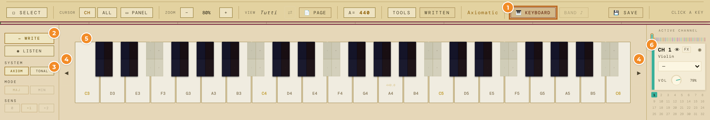
- On the left ② ③: how you play. WRITE writes and LISTEN only sounds; below is the tuning (SYSTEM, MODE and SENS).
- In the centre ⑤: the keys, each with the name of its note. The arrows ④ at the sides move the keyboard by an octave.
- On the right ⑥: the card of the channel —the instrument— you are writing in.
Two things worth knowing. With the keyboard open, the floating band is not available, because it does the same job. And with the keyboard closed, the computer letters do not write: the Score switches to LISTEN by itself and the letters go back to being shortcuts.
If a note is left sounding, press the Esc key: it cuts all the sound. (With the piece playing, use ■ stop.)
How you know it worked: the strip of keys appears below the score and the KEYBOARD button stays lit.
WRITE en LISTEN · schrijven, of alleen uitproberen
The two buttons on the left decide what happens when you play a key. In WRITE the note is written into the score, where the cursor is. In LISTEN the note only sounds: nothing is written.
To use it: press ◉ LISTEN ①. To go back to writing, press WRITE.
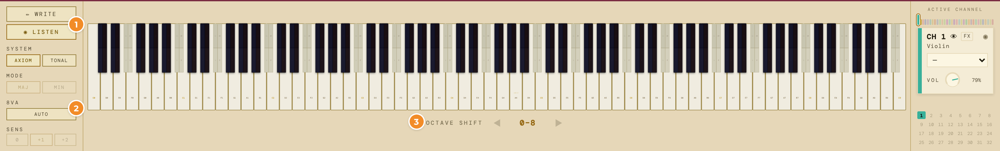
- WRITE is the working mode: the on-screen keys write, with the mouse, and so do the computer letters.
- LISTEN is for trying a chord or looking for a note without touching the score. The mouse and the letters sound, and nothing is written.
- In LISTEN the keyboard shows the octaves the piece uses. The 8VA button ② chooses how many you see: Auto, 4, 5, 6, 7 or 9.
- The OCTAVE SHIFT bar ③, below the keys, moves the keyboard towards the low or the high notes.
When you go back to WRITE, the keyboard starts again from C3 to C6.
How you know it worked: in LISTEN you play a key, it sounds, and no note appears in the score.
Writing with the computer keys
You do not need the mouse to write. With the Score’s keyboard open, three rows of computer letters are notes: each letter sounds and, in WRITE, writes its note where the cursor is.
To use it: open the keyboard with 🎹 KEYBOARD, leave the button on ✏ WRITE (that is how the Score opens) and press a letter.
- The bottom row, Z X C V B N M, is the scale. Z is always the tonic, the first degree.
- The middle row (A S D F…) sounds an octave higher, and the top row (Q W E R…), one more.
- The letters follow the key signature of the piece. In C major, Z X C give C, D, E. In G major they give G, A, B, and M gives the F sharp without you doing anything.
- If you press two or three letters at the same time, they are written as a chord.
- You choose the note value on the numpad: 5 is the quarter note. 9 puts a rest.
- Ctrl+Z removes the last note, as always.
There is a single rule. With the keyboard open, the letters are notes. With the keyboard closed, the letters are the Score’s shortcuts (for example, Z opens the Panel). And if you are typing in a box —the title, the words of a song—, the letters go into the box and not into the score.
How you know it worked: you press Z, the tonic sounds, the note appears in the score and the cursor moves on by itself.
TODAL · playing by degrees
TODAL is a way of playing by degrees: instead of looking for each note, you play the first degree, the second, the third… of the key of the piece. The same key always gives the right note of that key, so you can write correctly in any key without knowing how to play the piano.
To open it: press the WRITE button ① several times. Each click changes mode: ✏ WRITE → TODAL PLAY → TODAL WRITE → ✏ WRITE. The button always says which one you are in.
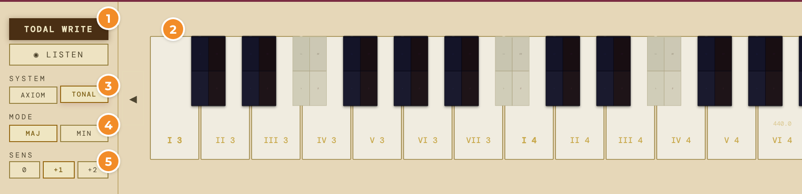
- The keys ② carry the degree in Roman numerals, from I to VII, and the octave number: I 3, II 3, III 3…
- TODAL PLAY only sounds. TODAL WRITE writes. In both you play with the mouse or with the computer letters.
- The CapsLock key of the computer turns TODAL on and off; it comes in as TODAL PLAY.
- If the Cosmic Keyboard changes tonic, the Score goes into TODAL PLAY by itself and waits: it does not write until you switch to WRITE.
How you know it worked: the button says TODAL WRITE and each white key shows a Roman numeral. If you change key, the degrees stay in the same place.
The four modes, at a glance
The WRITE and LISTEN buttons give four modes. In all four you play with the mouse or with the computer letters. Only two things change: whether the note is written, and what you read on the keys.
| The button says | The mouse and the letters | On the keys you read |
|---|---|---|
| ✏ WRITE | sound and write | the name of the note: C3, D3… |
| ◉ LISTEN | only sound | the name of the note |
| TODAL PLAY | only sound | the degree: I 3, II 3… |
| TODAL WRITE | sound and write | the degree |
The Cosmic Keyboard is played the same way: the same three rows of letters and the same horizon. The only difference is where you choose the key. In the Cosmic Keyboard, with its KEY and ALTERATION buttons. The Score has no such buttons: the key is the key signature of the piece.
How you know which one you are in: look at the button. It says ✏ WRITE, TODAL PLAY or TODAL WRITE; if the one that is lit is ◉ LISTEN, you are in LISTEN.
SYSTEM · Axiom of Tonal
SYSTEM chooses how the notes are tuned. They are the two buttons marked ③ in the TODAL picture.
- Axiom: pure Pythagorean tuning. Each note has its fixed place, whatever the key.
- Tonal: each note is tuned according to the role it plays in the key. It is the system that makes the harmony speak.
With Axiom, MODE and SENS stay off, because they only make sense when there is a key. When you switch to Tonal they come on, and SENS starts at +1.
How you know it worked: when you press Tonal, the MAJ and MIN buttons and the three SENS buttons are no longer greyed out.
MODE and SENS · major or minor, and how far the leading note rises
These buttons only work with SYSTEM on Tonal. MODE (④ in the TODAL picture) chooses whether the key is major or minor. SENS ⑤ chooses how far the leading note is raised: the seventh degree, the note that asks to reach the tonic.

- MAJ: major mode. MIN: minor mode; pressing it opens a little window to choose the minor scale: Natural, Harmonic or Melodic.
- SENS 0: the leading note is not raised.
- SENS +1: the leading note rises a little. This is the usual setting, and the one it starts with.
- SENS +2: it rises even more, on the chromatic notes too. The effect is more marked.
The sound is produced by the Cosmic Keyboard: the Score sends it these settings and it plays them.
How you know it worked: the button you chose stays lit.
The octave window · reaching lower or higher notes
The keyboard shows only part of all the notes: at the start, from C3 to C6. To reach lower or higher notes you move that “window”.
- The ◀ ▶ arrows at the sides (④ in the first picture) move the window one octave towards the low or the high notes.
- The names of the first and the last key tell you where it ended up: for example, C3 and C6.
- In LISTEN, the 8VA button sets 4, 5, 6, 7 or 9 octaves, or goes back to Auto: the octaves the piece really uses.
How you know it worked: you press ▶ and the first key changes from C3 to C4.
The active-channel card · which instrument you are writing for
Each instrument of the piece has its channel. The right-hand zone of the keyboard shows the channel you are writing in, and lets you move to another with one click.
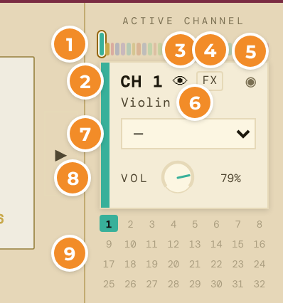
- The row of colours ①: all the channels, each in its colour. One click changes channel.
- CH ② is the channel number, and below it is its name ⑥.
- The eye 👁 ③ shows or hides the staff of that channel.
- FX ④ opens the channel’s Sound FX: reverb, echo and other effects.
- ◉ ⑤ mutes the channel, or gives it its sound back.
- The menu ⑦ shows the instrument. How to choose who plays in each channel is in The instrument of a channel.
- VOL ⑧: drag the knob up or down; the number shows the percentage.
- The numbers 1 to 32 ⑨: one click and you are writing in that channel, without opening CHANNELS.
How you know it worked: the CH number changes and the colour stripe of the card takes the colour of the new channel.
The Panel · a second view of the score
The Panel is a second view of the score, below the first. It is for looking at two things at once: for example, the soloist above and the bass below, or the voice you are copying and the voice you are writing.
To open it: press ▭ PANEL ① on the Score bar.
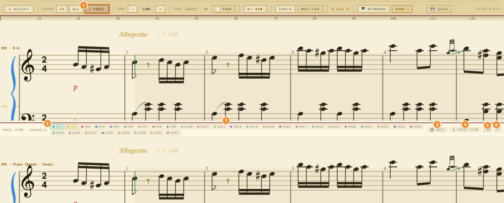
- The Panel and the keyboard are never shown together: opening one hides the other. With the Panel open the Score switches to LISTEN, so that the computer keys do not write without your seeing it.
- When it opens it shows the channel where the cursor is.
- The line ⑦ that separates it from the score can be dragged to make it taller or shorter.
- The ✕ ⑥ hides it.
How you know it worked: below the score the “PANEL VIEW · CHANNELS” row appears and, further down, the same music again.
The CH buttons · which instruments show in the Panel
In the Panel’s header there is a small button for each channel (② in the Panel picture), in that channel’s colour. With them you choose which instruments show in the Panel.
- One click puts the channel in the Panel; another click takes it out. You can have several at once.
- If you write in a channel that was not there, the Panel adds it by itself, so that you see the note you have just placed.
How you know it worked: the small button is highlighted and that channel’s staff appears in the Panel.
The Panel’s zoom and scrolling
The Panel has its own size, separate from that of the score above: you can have the Panel large and the sheet small.
- Ctrl + wheel, with the pointer over the Panel, changes only the Panel’s zoom. The percentage shows in the header (⑤ in the Panel picture).
- The wheel alone scrolls the Panel.
- The first time it opens it takes the score’s zoom; after that it remembers its own.
How you know it worked: the percentage in the header changes and the score above does not move.
🎧 SOLO · alleen horen waar je naar kijkt
🎧 SOLO (③ in the Panel picture) makes only the channels in the Panel sound. The others are silent while it is on.
- It does this through the Console, the mixing desk: it puts S (solo) on the Panel’s channels and M (mute) on the rest.
- When you turn it off, or close the Panel, everything goes back to how it was. None of this is saved in the piece.
- If you change the Panel’s channels with SOLO on, it adjusts by itself.
How you know it worked: you press play and you hear only the instruments in the Panel.
🖨 PRINT VIEW · one instrument’s part
🖨 PRINT VIEW (④ in the Panel picture) shows the Panel’s channels as a sheet ready to print. It is the short way to get one instrument’s part, or a group’s.
- Choose the channels you want with the CH buttons and press PRINT VIEW.
- The view is read-only: you cannot edit there.
- From there you print it on paper or save it as a PDF.
How you know it worked: the sheet opens with only the instruments you chose.
You can also make corrections inside the Panel
In the Panel you can make corrections too, not only look.
- Right-click a note or a sign inside the Panel: the same editors as in the score open —note, slur, dynamic, tuplet, tempo—, next to the pointer.
- The change is made in the real channel: you see it in the score above as well.
- If you select several notes, their boxes show in the Panel too.
How you know it worked: the change you made in the Panel appears at the same time in the score above.
Wat je wilt doen, en welk paneel het doet.
Twee regels en je kunt alles openen. Wat in de bovenste balk staat, open je met een klik op de knop en sluit je met nog een klik. Wat op de partituur staat, open je met een rechtsklik op het ding zelf —een noot, een boog, een maatstreep, een kanaalnaam—, dus je hoeft geen menu te zoeken: het menu is het menu van wat je aanraakte. Elk paneel kun je aan zijn kop verslepen, elk heeft de pin ⊗ zodat een klik erbuiten het niet sluit, en de toets X verbergt ze allemaal en brengt ze terug.
In de bovenste balk — wat voor het hele stuk geldt: hoe het bewaard wordt, in welk tempo het loopt, in welke toonaard het staat, welke instrumenten het heeft.
File · openen, opslaan en het stuk meenemen
In MENU FILES bewaar en open je je werk. Een werk van Music Motion wordt bewaard in een .mmf-bestand: daarin zitten de noten en ook hoe ze gespeeld worden (dynamiek, tempo’s, de klank van elk instrument).

- 🆕 NEW: een nieuwe, lege partituur.
- 💾 SAVE AS…: bewaart met een naam en in een map die je kiest. Daarna bewaart de knop SAVE in de balk (of Ctrl+S) altijd in datzelfde bestand.
- 💾 EXPORT MMF: downloadt een kopie van de .mmf naar je downloadmap.
- 📂 IMPORT MMF: opent een .mmf.
- 📄 EXPORT XML en 📥 IMPORT XML: bewaren en openen MusicXML, het formaat dat Finale, Dorico, Sibelius en MuseScore begrijpen.
- 🖨 PRINT / PDF: stuurt het blad naar de printer of bewaart het als pdf.
- 🔊 SAVE AS WAV: neemt de klank van het werk op in een audiobestand. Het duurt zo lang als de muziek, want die wordt opgenomen terwijl ze speelt; CANCEL stopt het.
Zo weet je dat het bewaard is: de knop SAVE toont een paar seconden “✓ SAVED” in het groen. Als de browser het bewaren niet toelaat, zegt de Score het je: hij zwijgt niet.
Score Info · de titel en wie het schreef
Score Info is de omslag van je werk: de titel en wie het schreef. Het is wat bovenaan de eerste afgedrukte pagina staat.
- Druk op ✎ INFO, in de bovenste balk, naast MENU FILES.
- Typ Title, Subtitle, Composer (wie het componeerde), Author (wie het bewerkte of overschreef) en Copyright.
- Druk op Apply.

Zo weet je dat het gelukt is: in de weergave PAGE zie je de grote titel bovenaan en de componist rechts.
Orchestra zegt voor welke orkestgrootte het werk is, van kamerorkest tot groot romantisch orkest. Daarmee weet de suite hoeveel spelers elke strijkerssectie heeft.
Tempo · een Adagio instellen, of midden in het stuk van tempo veranderen
Tempo is de snelheid van de muziek. Het wordt gemeten in BPM: tellen per minuut. 60 BPM is één tel per seconde, zoals een klok; 120 BPM is twee keer zo snel.
Het tempo instellen:
- Zet de cursor op de maat waar dat tempo begint.
- Druk op de knop TEMPO.
- Kies bij Term een woord (Adagio = langzaam, Allegro = snel) of typ je eigen woord.
- Stel bij BPM het getal in, met − en +.
- Druk op Insert Marking.

Zo weet je dat het gelukt is: boven de notenbalk staat bijvoorbeeld “Allegro ♩ = 120”, en de muziek speelt op die snelheid.
Om de muziek halverwege sneller of trager te laten gaan: zet de cursor op de maat waar het verandert en herhaal de stappen.
- This bar zet het tempo aan het begin van de maat. This place zet het op de precieze tel waar de cursor staat.
- Met Show uit verdwijnt “♩ = 120” uit de partituur, maar de muziek houdt die snelheid.
Sleutel · midden in de notenbalk van sleutel veranderen
De sleutel is het teken aan het begin van de notenbalk. Hij zegt welke noot elke lijn is. De G-sleutel (Treble) is voor hoge klanken: viool, fluit, de rechterhand van de piano. De F-sleutel (Bass) is voor lage klanken: cello, contrabas, de linkerhand. De C-sleutel (C Clef) is voor de altviool.
Van sleutel veranderen:
- Zet de cursor op het instrument (en op de maat, als de sleutel onderweg verandert).
- Druk op de knop CLEF.
- Kies bij Scope tot waar hij geldt (zie hieronder).
- Klik op de sleutel die je wilt. De C-sleutel sleep je omhoog of omlaag om hem op een andere lijn te zetten.

- All channels: alle instrumenten, het hele werk. This channel: het actieve instrument, het hele werk.
- This bar: vanaf de maat van de cursor. Handig voor de cello die naar de C-sleutel gaat. This place: vanaf de precieze tel van de cursor.
- Selection: alleen de geselecteerde maten; daarna komt de vorige sleutel vanzelf terug.
De sleutel verandert de klank niet: hij verandert hoe de noten geschreven worden, zodat ze niet vol hulplijntjes komen. Als de nieuwe sleutel tegen een noot plakt, schuift ↔ Nudge hem wat naar links of rechts.
Octave (8va, 15ma, 8vb, 15mb) zet een octaaflijn boven enkele maten: de noten worden een of twee octaven dichter bij de notenbalk geschreven, maar klinken waar ze altijd klonken.
Maatsoort · en wat er gebeurt met wat al geschreven staat
De maatsoort zijn de twee getallen aan het begin, bijvoorbeeld 3/4. Het bovenste zegt hoeveel tellen elke maat heeft; het onderste welke noot één tel is (4 = kwartnoot, 8 = achtste noot). Een wals staat in 3/4: drie kwartnoten per maat.
Hem veranderen:
- Druk op de knop TIME.
- Typ Numerator (boven) en Denominator (onder), of kies er een uit Quick Select: 3/4, 2/4, 6/8…
- Kies een van de twee knoppen (zie hieronder).

- Apply to All Channels verandert alleen de getallen. De noten blijven waar ze staan. Gebruik het als je nog niets geschreven hebt, of als de maatsoort fout was maar de noten juist zijn.
- Re-bar the music verandert de getallen en verdeelt de noten opnieuw over de nieuwe maten. Een noot die door een nieuwe maatstreep doorgesneden wordt, wordt in tweeën gedeeld en verbonden.
Zo weet je dat het gelukt is: aan het begin van de notenbalk zie je de nieuwe maatsoort, en met Re-bar heeft elke maat precies de tellen die de maatsoort zegt.
Let op: TIME verandert de maatsoort van het hele werk, vanaf het begin. Als het werk al maatwisselingen in het midden heeft (bijvoorbeeld omdat je het uit Finale importeerde), werkt Re-bar niet.
Voortekening · en de muziek meetransponeren
De voortekening zijn de kruisen (♯) of mollen (♭) aan het begin van elke notenbalk. Ze zeggen in welke toonaard de muziek staat: G groot heeft één ♯, F groot heeft één ♭.
De voortekening instellen:
- Druk op de knop die de toonaard toont (bijvoorbeeld C Major).
- Kies tot waar ze geldt (zie hieronder).
- Kies Major of Minor.
- Loop met ▶ en ◀ door de toonaarden: elke klik op ▶ voegt een ♯ toe (of haalt een ♭ weg), elke klik op ◀ voegt een ♭ toe (of haalt een ♯ weg). De voortekening verandert meteen.

- All CH: alle instrumenten, het hele werk. This CH: alleen het actieve instrument.
- This Bar: vanaf de maat van de cursor. Zo verander je halverwege het werk van toonaard.
- Selection: alleen de geselecteerde maten; daarna komt de vorige voortekening terug.
Twee verschillende dingen: de voortekening veranderen laat de noten waar ze staan. ⇅ Transpose music to key verplaatst ook de muziek naar de nieuwe toonaard: alles klinkt hoger of lager, zoals wanneer een zanger het lied “een toon lager” vraagt.
Zo weet je dat het gelukt is: de ♯ of ♭ verschijnen aan het begin van elke notenbalk, of in de maat waar de toonaard verandert.
Maten · opmaat, maatstrepen en de adem tussen de delen
BARS dient voor alles wat met maten te maken heeft: de opmaat, maten toevoegen of wissen en het soort maatstreep. Het werkt op de maat waar de cursor staat.
Maten toevoegen of wissen:
- Zet de cursor op een maat en druk op BARS.
- De schakelaar zegt Add (toevoegen) of Delete (wissen). Ernaast: hoeveel maten.
- Kies Before (vóór) of After (na) de maat van de cursor. In het midden zie je haar nummer (M1 is maat 1).
- Druk op Apply.
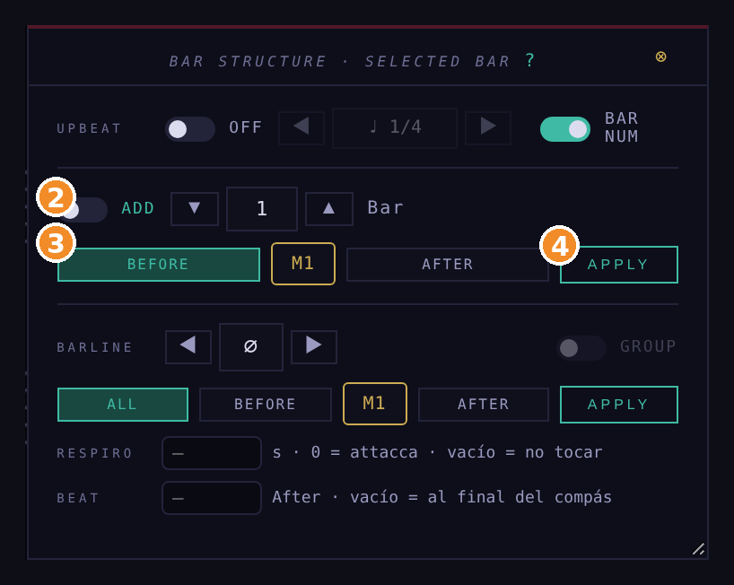
Alles wat erna komt, schuift mee met de muziek: noten, dynamiek, tempo’s, herhalingen en wisselingen van maatsoort of voortekening.
- Upbeat: de opmaat, de noten vóór de eerste volle maat (de “en” vóór de “één”). Zet hem aan en kies hoe lang hij duurt.
- Barline: het soort maatstreep na (of vóór) de maat: enkel, dubbel, slot, gestippeld… De dubbele scheidt delen; de slotstreep sluit het werk af.
- Respiro: seconden stilte bij die maatstreep voor het verder gaat, handig tussen bewegingen. 0 = attacca, zonder stoppen verder.
- Beat: zet de maatstreep midden in de maat, vóór die tel. Dat gebeurt wanneer een deel midden in een maat eindigt en wat volgt de opmaat van het volgende deel is.
- BAR NUM toont of verbergt de maatnummers. GROUP laat de maatstrepen doorlopen tussen de notenbalken van elke accolade of haak.
- REP opent Repeats, voor herhalingen.
Zo weet je dat het gelukt is: de maatnummers schuiven op en de nieuwe maatstreep staat op haar plaats.
Herhalingen · herhalingen, D.C., Coda en het stuk uitgevouwen zien
Een herhaling laat een stuk muziek twee keer (of vaker) klinken zonder het opnieuw te schrijven. Ze wordt aangeduid met de strepen ‖: en :‖. Met D.C. (da capo, “vanaf het begin”) of D.S. (dal segno, “vanaf het teken”) springt de muziek terug.
Een stuk herhalen:
- Druk op de knop :|.
- Kies bij I WANT TO ① voor Repeat.
- Typ bij From bar en To bar ② de eerste en de laatste maat. Bij Times, hoeveel keer het klinkt.
- Kijk naar de regel Plays ⑤: die zegt in welke volgorde de maten gespeeld worden.
- Druk op Create ⑥.

Terugspringen met D.C. of D.S.: kies bij I WANT TO voor Jump back.

- D.C. gaat terug naar het begin; D.S. gaat terug naar het teken 𝄋, dat je bij Segno at ① zet.
- Hoe het eindigt ③: simple gaat door tot het einde; al Fine stopt waar Fine staat; al Coda springt naar de Coda.
- Unfold ④ toont het werk uitgevouwen, zoals het klinkt, met de herhalingen uitgeschreven. Fold klapt het weer in.
Zo weet je dat het gelukt is: in de partituur verschijnen de herhalingsstrepen (of de D.C. of D.S.), en de regel Plays zegt de volgorde die je zult horen.
Voor wie meer details nodig heeft:
Een sectie kan met haar eigen opmaat beginnen: From en To hebben elk hun Beat. From 24 · Beat 2 laat de sectie halverwege maat 24 beginnen; To 64 · Beat 1 zet het :‖ halverwege maat 64, en de herhaling gaat terug naar de opmaat van de sectie. From 0 begint bij de opmaat van het stuk, dus de eerste herhaling keert daarnaar terug. Met Beat leeg neemt de sectie hele maten. Een stuk kan meerdere secties na elkaar hebben, en ze worden allemaal herhaald.
Het eerste en tweede huisje voeg je toe met + Add ending, één per doorgang, en elk huisje heeft zijn eigen Beat aan het begin en aan het einde: zo schrijf je een eerste huisje dat eindigt met de opmaat die terugkeert naar het begin, of een tweede huisje dat ruimte laat voor de opmaat van de volgende sectie. Elk huisje klinkt alleen in zijn doorgang, en het label is het nummer van die doorgang: „1.”, „2.” en, bij een herhaling van drie keer, „3.”.
In maten van 6/8, 3/8 of 9/8 telt Beat achtsten: in 6/8 gaat het van 1 tot 6. To 8 · Beat 5 zet het :‖ na het vijfde achtste van maat 8. Hetzelfde geldt voor de eindingvakken en voor de Beat van BARS.
Herhaling met 1e en 2e eindmaat. Schrijf de muziek van beide eindmaten na elkaar: de 1e in de laatste maat van de herhaling, de 2e in de volgende maat. In Repeats: From bar = de eerste maat, To bar = de maat van de 1e eindmaat, en de knop 1st / 2nd ending. Beide eindmaten worden vanzelf gemaakt. Vóór Create zegt de regel Plays in welke volgorde de maten gespeeld worden: dezelfde motor die speelt, schrijft hem.
Om haar te verbeteren: rechtsklik op haar gearceerde zone (boven of onder de notenbalk), op de maatstreep ‖: of :‖, of op de haak van een eindmaat: dezelfde Repeats opent met alles ingeladen. Apply verbetert haar en Delete wist haar. Staat er al een herhaling op die maten, dan maakt de Score er geen tweede bovenop: hij waarschuwt.
Tekst · repetitietekens plaatsen
TEXT zet teksten op de partituur: de repetitieletters (A, B, C…, om te zeggen “we beginnen bij B”), en woorden zoals Coda, Fine, Solo of Tutti.
Een tekst zetten:
- Zet de cursor waar hij moet komen.
- Druk op de knop TEXT.
- Typ de tekst ① of klik op een van de snelle teksten ②.
- Druk op Insert Text ⑤.

Repetitieletters in het hele werk in één keer zetten:
- Typ bij EVERY ③ om de hoeveel maten (bijvoorbeeld 10).
- Kies LETTERS (A, B, C…), NUMBERS (1, 2, 3…) of BAR NUM (het maatnummer).
- Kies het kader: box (vierkant), circle of none (geen kader).
- Druk op Generate ④. Clear marks haalt ze weg.
- SCOPE: This channel, op dit instrument; All channels, op allemaal; Each group, één keer voor elke groep notenbalken.
- De woorden van een lied, lettergreep per lettergreep onder de noten, schrijf je in het deel LYRICS: zie Liedtekst.
Zo weet je dat het gelukt is: de tekst verschijnt boven de notenbalk, op de plaats van de cursor.
Liedtekst · de lettergrepen vastgemaakt aan de noten
Voor een lied, een koor of een oefening met tekst schrijf je de liedtekst niet als losse tekst maar noot voor noot. Elke lettergreep wordt in zijn noot bewaard en gecentreerd eronder getekend: als je de zoom of de spatiëring verandert, volgt de lettergreep zijn noot, en bij de herhalingen gaat ze niet verloren. Het staat in de popup TEXT, in het blok Lyrics.
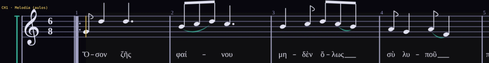
De liedtekst typen. Zet de cursor op de noot waar de tekst begint —of selecteer ze— en druk op LYRICS. Er verschijnt een veld boven de noot: je typt de lettergreep en Spatie (of Tab) gaat naar de volgende noot. Loopt het woord door, dan typ je in plaats van de spatie het koppelteken -: de lettergreep houdt haar koppelteken en je gaat naar de volgende noot. Shift+Tab gaat terug naar de vorige noot, Enter sluit af en Esc stopt zonder op te slaan wat je het laatst typte. Rusten en overgebonden noten worden vanzelf overgeslagen.
Een voorbeeld: voor „Twinkel twinkel kleine ster” typ je Twin - kel Spatie twin - kel Spatie klei - ne Spatie ster. Duurt een lettergreep meerdere noten (een melisme), druk dan op Spatie op de volgende noten zonder iets te typen: ze blijven zonder lettergreep en de vorige lettergreep wordt verlengd. Om een lettergreep te verbeteren zet je de cursor op haar noot en druk je op LYRICS: het veld toont wat erin staat; je wist het en typt de nieuwe.
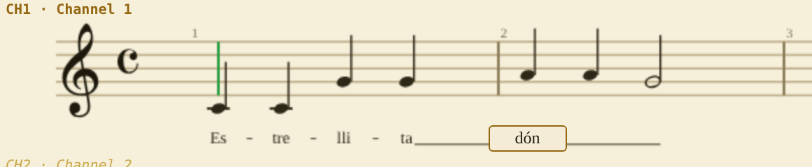
Hoe het eruitziet. Tussen de lettergrepen van één woord tekent de Score het koppelteken, gecentreerd in de vrije ruimte; als de laatste lettergreep van een woord meerdere noten duurt, tekent hij de verlengingslijn tot de laatste noot van het melisme. Size verandert de grootte van de liedtekst van het kanaal en Y zet hem lager of hoger ten opzichte van de notenbalk, bijvoorbeeld bij heel lage noten; met Line 2 of 3 gekozen verschuift Y de vertaling. Elk kanaal heeft zijn eigen liedtekst: een vierstemmig koor heeft een tekst op elke notenbalk.
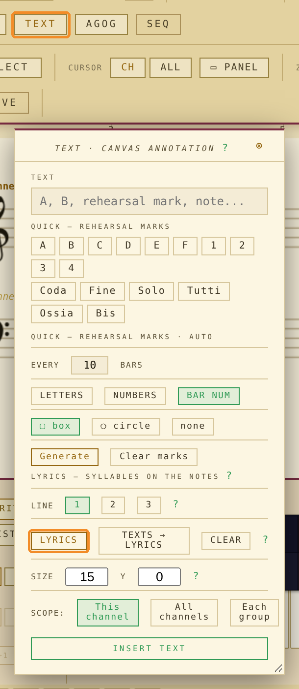
De vertaling. Onder de liedtekst is plaats voor nog twee regels vertaling. Kies Line 2 (of 3) en druk op LYRICS op de eerste noot van een zin: typ daar de hele zin, met spaties, en Tab gaat naar de volgende noot (Tab op noten waar geen zin begint laat ze leeg). Elke zin blijft aan zijn noot vast en wordt cursief getekend, uitgelijnd vanaf die noot en onder het systeem, ook als de liedtekst bij de bovenste notenbalk hoort. Line 1 gaat terug naar de gezongen tekst. CLEAR en TEXTS → LYRICS werken op de gekozen regel.

TEXTS → LYRICS dient voor een liedtekst die al als losse teksten van het kanaal geschreven was: het maakt er echte liedtekst van, en elke tekst gaat naar de noot die het dichtst bij zijn tel ligt. CLEAR wist de liedtekst van het actieve kanaal. Alles is ongedaan te maken met Undo en wordt met het stuk bewaard in de .mmf. De liedtekst reist ook mee in MusicXML: hij gaat mee bij het exporteren (elke lettergreep met haar koppelteken, de vertaling als strofen 2 en 3) en komt binnen bij het importeren van XML uit Finale, MuseScore of Sibelius.
Demomodus · een stuk tonen zonder het te bewerken
Om een stuk voor te stellen —in de klas, op een scherm of om een video op te nemen— opent de Score in demomodus door ?demo aan het adres toe te voegen: mm-score-page.html?demo. De bewerkingsbalken, het klavier en de knoppen bovenaan worden verborgen; de partituur en de onderste balk blijven, met Play, Pause, Stop en de maatsprongen. Spatie speelt en stopt. Niets wat je op de partituur doet verandert ze: een klik zet alleen de cursor om van daar te spelen.
Met &file= opent meteen een bestand, en met &page wordt het als blad getoond: mm-score-page.html?demo&file=../Claude%20outputs/Claude-2026-seikilos.mmf&page. Het geluid reist mee met de pagina: de demo laadt de Keyboard verborgen, als motor, en het stuk klinkt zonder iets anders te openen (als er al een Keyboard open is, gebruikt hij die).
Bovenaan, gecentreerd naast de titel, heeft de demo drie knoppen: PAGE / SCROLL wisselt tussen het blad en de strook, PRINT maakt het blad klaar en opent het afdrukken met de pagina’s klaar (de browser toont altijd eerst zijn afdrukvenster), en PULSE opent de metronoom.

Dynamiek · een aanduiding, of een crescendo over twee maten
De dynamiek zegt hoe luid of zacht je speelt: pp heel zacht, p zacht, mf half luid, f luid, ff heel luid. De vorken (crescendo en diminuendo) zeggen dat de klank beetje bij beetje groeit of wegsterft.

Een dynamiekteken zetten:
- Zet de cursor op de noot waar het begint.
- Druk op de knop DYN.
- Klik op het teken ④: p, f, mf…
Een vork zetten:
- Zet de cursor waar hij begint, of selecteer het stuk dat je wilt.
- Klik op crescendo of diminuendo ①.
Zonder selectie is de vork één maat lang. Wil je hem langer of korter, sleep dan aan zijn punt.
- cresc. en dim. in woorden ② dienen als de getekende vork niet past. SPAN zegt hoe lang ze duren: 1 beat (een tel), ½ bar of 1 bar.
- SCOPE ③: This channel, alleen dit instrument; All channels, het hele orkest; Selected, de instrumenten die je aanvinkt.
- In de onderste rij ⑤ kun je een woord voor of na het teken schrijven, zoals “più f” of “p subito”.
Zo weet je dat het gelukt is: het teken of de vork verschijnt onder de notenbalk, en bij het spelen hoor je de verandering.
Articulaties · het staccato, de streek, de triller
Articulaties zijn de kleine tekens boven of onder de noot die zeggen hoe je ze speelt: de punt van het staccato (kort), het streepje van het tenuto (aangehouden), het accent > (met kracht).
Een articulatie zetten:

- De bovenste regel ① zegt waar het terechtkomt: het kanaal, de cursor of de selectie, en hoeveel noten (bijvoorbeeld “1 note”).
- SIDE ②: auto beslist zelf of het teken boven of onder komt; beam zet het aan de kant van de stok; head, aan de kant van het nootkopje.
- De tekens ③ staan in groepen: TOUCH (staccato, tenuto…), EMPHASIS (accenten), TIME (fermata, caesura, breath), PEDAL en, verder naar onder, de versieringen (trill, turn, mordent, tremolo).
- Met een selectie zet ped het pedaal in waar ze begint en laat het los waar ze eindigt.
Zo weet je dat het gelukt is: het teken verschijnt op de noot, en bij het spelen hoor je het: het staccato klinkt kort, het accent luider.
Duur · de nootwaarde kiezen voordat je schrijft
Voor je een noot schrijft, kies je hoe lang ze duurt: haar nootwaarde (hele, halve, kwartnoot, achtste…). De nootwaarde blijft ingesteld, en elke noot die je schrijft krijgt die waarde tot je een andere kiest.
De nootwaarde kiezen:
- Druk op de knop DUR.
- Klik op de nootwaarde ②: 1/1 is de hele noot, 1/2 de halve, 1/4 de kwartnoot, 1/8 de achtste noot, en zo verder tot 1/64.
- Schrijf de noten.

Sneltoets: je kunt de nootwaarde ook kiezen met de numpad, zonder de popup te openen.
Rusten schrijven: klik nog eens op de nootwaarde die al oplicht. Nu wordt elke noot een rust. Nog een klik, of een andere nootwaarde, en je bent terug bij de noten.
De vier knoppen onderaan ③:
- DOT zet de punt: de noot duurt anderhalve keer zo lang. Het geldt alleen voor de volgende noot.
- GRACE laat de noten verschijnen als voorslagen. Elke klik verandert: ACCIACCATURA (doorgestreept), APPOGGIATURA, uit. Het blijft aan tot je het uitzet.
- REST zet een rust van de gekozen nootwaarde waar de cursor staat.
- TUPLET opent de triool: drie noten op de plaats van twee.
Zo weet je dat het gelukt is: de gekozen nootwaarde blijft groen oplichten, en de noot die je schrijft heeft die vorm.
Expressie · dolce, espressivo, en hoever ze reiken
Een expressie is een woord dat het karakter van de muziek zegt: dolce (zacht, lief), espressivo, agitato, cantabile. In Music Motion is het woord niet alleen inkt: het instrument leest het en verandert zijn manier van spelen.
Een expressie zetten:
- Zet de cursor waar ze begint.
- Druk op de knop EXPR.
- Typ het woord ① of klik op een van de snelle woorden ②.
- Druk op Insert Expression ④.

- Het woord geldt vanaf daar tot de volgende expressie van hetzelfde instrument.
- SCOPE ③: This channel, alleen dit instrument; All channels, allemaal.
- Met Show uit verdwijnt het woord uit de partituur, maar het instrument blijft het spelen.
- Je kunt het in je eigen taal schrijven: zie hoe.
Zo weet je dat het gelukt is: het woord verschijnt cursief boven de notenbalk.
AGOG · wie beslist over het rubato
Agogiek is de vrijheid van de tijd: een noot of een frase een beetje rekken, zoals een muzikant doet als hij ademt (het rubato). Deze popup is de kaart van de agogiek in je werk: hij zegt waar er is en brengt je erheen.

De agogiek in je werk bekijken:
- Druk op de knop AGOG.
- In de lijst ① zie je elke frase (⌘) en elke gerekte noot (◆), in de volgorde van de maten.
- Klik op een ervan: de cursor gaat erheen en de editor opent, zodat je ze kunt verbeteren.
Een frase agogiek geven:
- Selecteer met SELECT de maten van de frase.
- Druk op AGOG en dan op ⌘ Phrase from selection ②. De agogiek van de frase opent, waar je kiest hoe ze ademt.
Het is hetzelfde als rechtsklikken op de selectie en ⌘ ASYM AGOG kiezen. Als er niets geselecteerd is, zegt de knop het je.
Eén noot rekken: rechtsklik op de noot en druk op ← AGOG. Zie AGOG van de noot.
- Show all ③ toont of verbergt alle agogische tekens in de partituur. Verborgen blijven ze in het bestand bewaard.
Zo weet je dat het gelukt is: de nieuwe frase of noot verschijnt in de lijst, bij haar maat.
Tools · wanneer het scherm volloopt met panelen
Terwijl je werkt, open je veel popups en het scherm loopt vol. TOOLS dient om ze te ordenen en om de instellingen te openen.
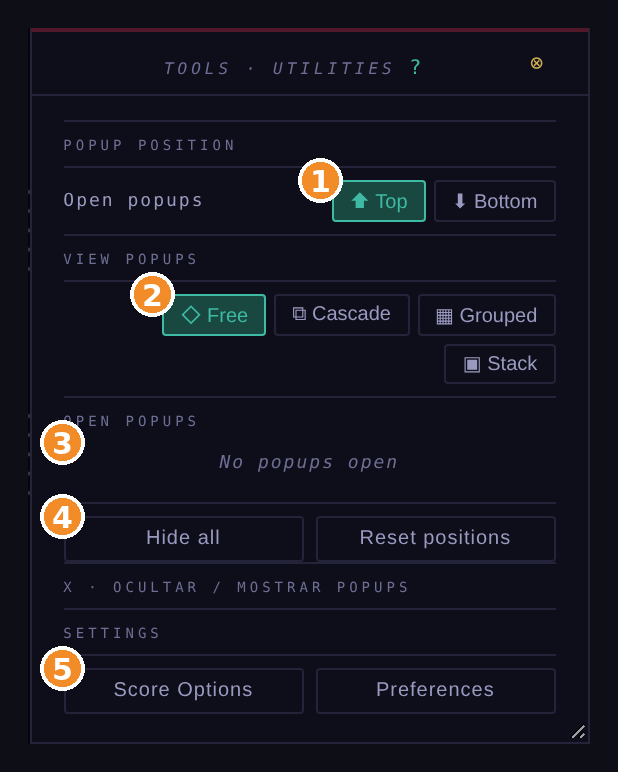
- Open popups ①: Top opent ze onder de bovenste balk; Bottom, boven het klavier.
- View popups ②: Free, elk waar je het liet; Cascade, trapsgewijs; Grouped, naast elkaar; Stack, op elkaar, zoals een stapel kaarten. Meer details.
- De lijst ③ toont de open popups: elk met een pijl om het naar voren te halen en een kruisje om het te sluiten.
- Hide all ④ verbergt alle popups in één keer; de toets X doet hetzelfde en toont ze weer. Reset positions zet ze terug op hun gewone plaats.
- Score Options en Preferences ⑤ openen de instellingen: hoe de partituur eruitziet en hoe de Score zich gedraagt.
Score Options · het blad laten ademen
Score Options regelt hoe de partituur eruitziet: of de noten te dicht of te los staan. Het opent vanuit TOOLS.
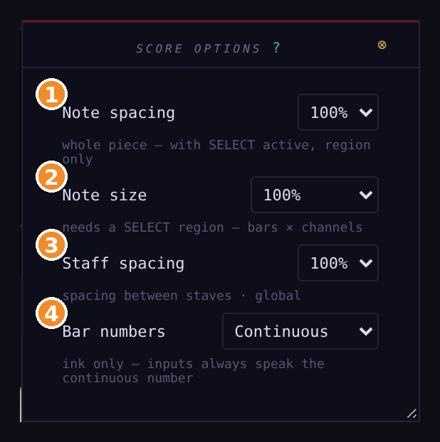
- Note spacing ①: de ruimte tussen de noten. Het geldt voor het hele werk; met een actieve selectie alleen voor dat stuk.
- Note size ②: de grootte van de noten, bijvoorbeeld kleiner voor een partij die alleen als houvast dient (cue). Er is een selectie nodig.
- Staff spacing ③: de ruimte tussen de notenbalken, voor het hele werk.
- Bar numbers ④: Continuous nummert de maten doorlopend; Per movement begint opnieuw bij elke beweging. Het verandert alleen wat je ziet: om naar een maat te gaan, blijft het nummer het doorlopende.
Zo weet je dat het gelukt is: de partituur verandert zodra je de waarde kiest.
Preferences · hoe je wilt dat de Score zich gedraagt
Preferences bewaart hoe je graag werkt. Je stelt het één keer in en het blijft bewaard voor de volgende keer. Het opent vanuit TOOLS.

- ① Open in: de map waar IMPORT MMF begint: de laatst gebruikte (Last used) of Documents.
- ② Coach: On of Off, of de Coach-app je tips geeft terwijl je schrijft.
- ③ Remember place: met On opent elk popup weer waar je het liet, met zijn grootte.
- ④ Save on its own: bewaart vanzelf om de 2, 5 of 10 minuten; Off doet dat niet.
- ⑤ Messages: de taal van de berichten. Met FR, NL of DE verschijnt de gids in die taal en de berichten voorlopig in het Engels.
- ⑥ Colours: de kleur van het scherm: Dark, Gray, Clear (zoals papier) of Contrast. Arrangement ordent de popups, zoals in TOOLS.
- ⑦ Warnings on open: Quiet controleert het bestand zonder je te storen; On screen toont je daarnaast welke maten je best bekijkt.
- ⑧ Notation: Key change zegt welke voortekens vervallen bij een wisseling van toonaard (Dropped only, alleen die wegvallen; All, allemaal); Slur is de vorm van een nieuwe legatoboog; Sizes, de grootte van dynamiek (DYN) en articulaties (ART); SUBDIV, Auto leidt ze bij het openen af uit de muziek en File gebruikt die van het bestand.
Referentietoonhoogte · spelen op 415, zoals in de barok
De stemtoon is de A waarop het hele orkest stemt. Vandaag gebruikt men A = 440 Hz (440 trillingen per seconde). In de barok lag hij lager, rond 415.
Hem veranderen:
- Druk op de knop A= 440 in de bovenste balk.
- Kies een van de historische ②, of verschuif de schuifregelaar ① voor een precieze waarde.
- Reset ③ gaat terug naar 440.
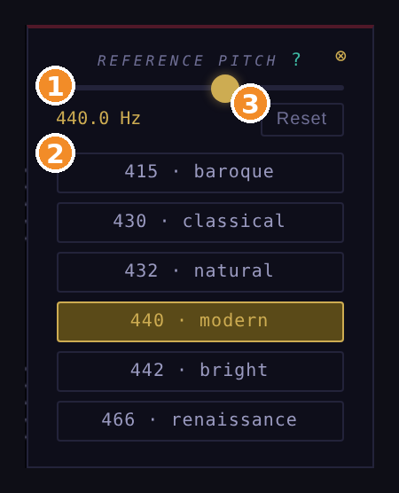
- Het transponeert niet: het hele werk klinkt iets lager of hoger, maar de geschreven noten veranderen niet.
- Het is dezelfde A= als in het Keyboard: hem daar veranderen terwijl de Score speelt, werkt ook.
Zo weet je dat het gelukt is: de knop toont het nieuwe getal en de muziek klinkt lager of hoger.
Ongedaan maken en wissen · teruggaan, of een kanaal leegmaken
Ongedaan maken draait het laatste terug wat je deed. De sneltoets is Ctrl+Z (of de toets Backspace ←), en Ctrl+Y doet het opnieuw. Deze popup dient om meerdere stappen in één keer terug te gaan, en om te wissen.
Voor één stap hoef je de popup niet te openen: de pijlen aan weerszijden van de knop doen hetzelfde als de sneltoetsen. ↩ ④ maakt één stap ongedaan (zoals Ctrl+Z) en ↪ ⑤ doet hem opnieuw (zoals Ctrl+Y).
Meerdere stappen ongedaan maken:
- Druk op de knop ↩ UNDO.
- Kies hoeveel stappen ①: 1, 3, 5 of 10.
- Druk op ↩ Undo ②.

Wissen ③:
- At cursor: de noten van het actieve instrument die precies op de cursor staan.
- Selection: wat je geselecteerd hebt. Als er niets geselecteerd is, doet het niets.
- Active CH: alle noten van het actieve instrument. All CH: alle noten van alle instrumenten. Deze twee vragen het eerst voor ze wissen.
- Alles wat je wist, kun je ongedaan maken.
Zo weet je dat het gelukt is: onder de getallen zegt een regel hoeveel stappen er bewaard zijn. “No history yet” betekent dat er nog niets ongedaan te maken is.
Kanalen · een instrument aan het stuk toevoegen
Elk instrument van je werk woont in een kanaal: een rij in deze lijst en een notenbalk in de partituur. De Score heeft 32 kanalen.
Een instrument toevoegen:
- Druk op de knop ⚙ CHANNELS.
- Druk op + ADD CHANNEL ④: het volgende kanaal gaat aan en zijn notenbalk verschijnt.
- Open in zijn rij de lijst ② en kies het instrument.

Zo weet je dat het gelukt is: de nieuwe notenbalk verschijnt met de naam van het instrument, en bij het spelen klinkt hij met zijn eigen klankkleur.
- Het vakje ① zegt of de notenbalk te zien is. Uit verdwijnt hij van het scherm maar blijft hij klinken: zien en niet zien.
- Het instrument ② bepaalt hoe het kanaal klinkt: meer details.
- 👁 maakt de notenbalk vaag; ◉ demt hem (horen en niet horen); FX geeft hem galm of echo (Sound FX).
- ☰ opent de groepsopties, om twee instrumenten op één notenbalk te zetten.
- List ⑤ laadt een kant-en-klare lijst met instrumenten, in plaats van ze een voor een te kiezen.
De strook · wat je voortdurend gebruikt, binnen handbereik
Knop BAND ♪. Een strook die de cursor volgt met wat je bij het schrijven het vaakst nodig hebt: voorslag, punt, tuplet, voorteken, agogiek, articulatie en dynamiek. Ze is er zodat je geen vier pop-ups hoeft te openen om één frase te schrijven.
De spelstand · waar de leerling staat
Rechtsklik op het logo. Toont het minilesje van de Coach en hoe het compositiespel verloopt: welke regel aan de beurt is, wat bereikt is en wat nog rest.
Sneltoetsen · die je gebruikt zonder het toetsenbord te verlaten
Rechtsklik op ✎ INFO. De korte tabel van wat de moeite waard is om uit het hoofd te kennen: het numerieke toetsenblok voor de nootwaarden, spatie om af te spelen, Ctrl+Z, Esc. En de link naar de volledige lijst, die je kunt afdrukken.
Op de partituur, over wat je al schreef — rechtsklik op de noot, de boog of de versiering die verbeterd moet worden.
Noteneditor · een noot verbeteren zonder ze opnieuw te schrijven
De noteneditor dient om een noot te veranderen die je al geschreven hebt: luider of zachter, met een ander voorteken, met de stok naar de andere kant, veranderd in een rust…
Om hem te openen: rechtsklik op de noot ①. Bovenaan staat welke noot het is en waar, bijvoorbeeld «DN5 · M1 B2» (D5, maat 1, tel 2).

Wat je het meest gebruikt:
- VEL ②: hoe luid deze ene noot klinkt. + en − veranderen ze met 1, +5 en −5 met 5. N geeft ze terug aan wat de dynamiekband zegt.
- Hide note verbergt de noot: ze klinkt nog, maar wordt niet afgedrukt. Flip stem draait de stok om. → Rest maakt er een rust van. Dot zet de punt erbij of haalt hem weg.
- ACC ③: het voorteken. Dubbelmol, mol, herstellingsteken, kruis, dubbelkruis.
- PRES ④: de aanwezigheid, het gewicht van de aanslag, van −2 tot +2. Om een binnenstem van een akkoord meer te laten horen, geef je ze PRES +1.
Een noot met een veranderde VEL of PRES draagt geen enkel teken in de partituur. Om ze te vinden zet je SHOW HIDDEN ⑤ aan: naast elke noot verschijnt in het grijs wat ze heeft (bijvoorbeeld «v96»), en haar kop wordt lavendelkleurig. Dat zie je alleen op het scherm, nooit op het afgedrukte blad.
Zo weet je dat het gelukt is: de verandering zie (of hoor) je meteen aan de noot, en de bovenste regel van de editor toont de nieuwe waarde. Vergist? UNDO maakt het ongedaan.
Van hieruit open je ook de editors van de legatoboog, de stok en de waardestreep, en met de rij ³ TUPLET die van de triool.
Legatoboog-editor · zodat de boog wordt zoals je hem bedoelde
Een legatoboog is de boog die meerdere noten verbindt: ze worden samen gespeeld, in één frase. De legatoboog-editor dient om te veranderen waar hij begint en eindigt, hoe hij eruitziet en hoe hij gespeeld wordt.
Om hem te openen: rechtsklik op de boog ①. De boog toont drie punten en de editor gaat ernaast open.

Bovenaan, Anchors: de pijlen ◀ ▶ van Start en End verschuiven het begin of het einde van de boog naar de vorige of de volgende noot.
De vorm van de boog ② verandert de tekening van de boog niet: ze verandert hoe de frase gespeeld wordt. De groene lijn in de editor toont het je, en in de partituur zie je het aan de kleur van de boog: groen waar de frase luider is, goudkleurig waar ze zachter is.

- > neemt af: begint sterk en eindigt zacht. < groeit: omgekeerd.
- <> opent in het midden en sluit. >º< zakt in het midden en komt terug.
- — vlak: aangehouden, zonder verandering. Met die vorm wordt de boog geboren.
- ∩∪∩ en ∪∩∪: noten per twee, sterk-zwak of zwak-sterk. De boog ziet er hetzelfde uit.
Hoeveel hij stijgt of daalt, kies je in Dynamics ③: Peak is hoeveel luider het hoogste punt wordt (+1 tot +4), en Valley hoeveel zachter het laagste (−1 tot −4), altijd ten opzichte van de geschreven dynamiek.
De knoppen die de tekening van de boog veranderen, zodat hij nergens tegenaan botst:
- Vertical ④: zet de hele boog hoger of lager (All) of alleen één uiteinde (Left, Right).
- Horizontal ⑤: verschuift het begin of het einde opzij.
- Curva ⑥: hoeveel de boog krom loopt, links, in het midden of rechts.
- Arrastre ⑦: de drie punten van de boog kun je ook met de muis slepen; ze klikken vast op ¼ van een tussenruimte (met Shift op ½). Deze rij toont hoeveel je ze verschoof, en ↺ Arrastre maakt alleen dat ongedaan.
- ⑧ ↕ Flip zet de boog aan de andere kant van de noten. ↔ Mirror spiegelt hem van links naar rechts. ↺ Reset geeft hem zijn automatische tekening terug. ✕ Delete slur wist de boog.
Zo weet je dat het gelukt is: de boog verandert in de partituur zodra je op een knop drukt, en als je luistert, volgt de frase de vorm die je koos. Bevalt het je niet, dan maakt UNDO het ongedaan.
Een boog van drie maten of meer hecht elk uiteinde vanzelf aan de juiste kant: aan de notenkop als de boog aan de kant van de kop ligt, aan het eind van de stok of aan de waardestreep als hij aan de kant van de stok ligt.
Stokeditor · wanneer de stok botst of te kort schiet
De stok is het verticale streepje van de noot. Het Score tekent hem vanzelf, naar boven of naar beneden, afhankelijk van hoe hoog de noot is. De stok-editor dient om hem te veranderen als hij ergens tegenaan botst of te kort is.
Om hem te openen: rechtsklik op de noot; kies in de noteneditor die opengaat STEM EDITOR ①.

- Direction ②: ↑ Up zet de stok naar boven, ↓ Down naar beneden en ⟳ Auto laat het Score kiezen.
- Extension ③: + maakt de stok langer en − korter, bijvoorbeeld zodat hij tot aan de waardestreep komt.
- X offset ④: verschuift de stok opzij. Handig bij secunden, als twee naburige noten de stok delen.
- ↺ Reset ⑤: geeft de stok terug zoals het Score hem tekent.

Zo weet je dat het gelukt is: de stok verandert in de partituur zodra je op de knop drukt. Het is alleen tekening: de noot klinkt hetzelfde.
Waardestreepeditor · verbinden, onderbreken en bepalen hoe de groep klinkt
De waardestreep is de dikke lijn die achtsten en zestienden in groepen verbindt, zodat ze makkelijk te lezen zijn. Het Score maakt de groepen vanzelf; de waardestreep-editor dient om ze te verbinden, te breken of te verschuiven.
Om hem te openen: rechtsklik op een noot van de groep; kies in de noteneditor BEAM EDITOR ①. Sneltoets: selecteer een noot en druk op Shift+B.

- Join ② verbindt de geselecteerde noten tot één groep; Break scheidt ze, elk met een eigen vlaggetje; Auto gaat terug naar de groepen van het Score. Wat je tekent is ook wat je hoort: het Score speelt de groep zoals hij eruitziet.
- Left, Right en Both ③ zetten het linker uiteinde, het rechter of de hele streep hoger (↑) of lager (↓). Reset angle, onderaan, geeft de streep haar automatische helling terug.
- Stems ④: alle stokken van de groep naar boven, naar beneden, omgedraaid (⇅) of automatisch.
- Int·Beams ⑤: hoeveel luider de belangrijke noten van de groep klinken dan de andere, van 0 (allemaal gelijk) tot 4 (heel duidelijk). G gebruikt de instelling van het hele stuk. Meer in Intelligent Beams.
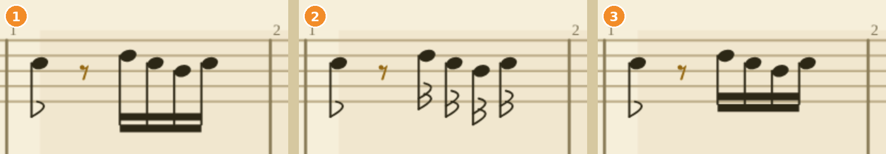
Zo weet je dat het gelukt is: je ziet de streep meteen verbonden, gebroken of verschoven, en als je luistert, klinkt de groep zoals je hem tekende. Vergist? UNDO maakt het ongedaan.
Tupleteditor · de haak en het getal
Een triool zijn drie noten die de plaats van twee innemen. Erboven staat een 3, soms met een haak. De triool-editor verandert hoe die haak en dat cijfer eruitzien.
Om hem te openen: rechtsklik op de haak of het cijfer van de triool ①.

- Bracket ②: Slur tekent een boog, Straight een rechte haak en None niets, alleen het cijfer.
- Number ③: On toont het cijfer en Off verbergt het.
- Angle ④ laat de haak hellen (↻ geeft hem zijn automatische helling terug) en Move verschuift hem zodat hij de noten niet bedekt. Size verandert de grootte van het cijfer.
- ✕ Untuplet ⑤ maakt de triool ongedaan: de noten krijgen hun gewone waarden terug. Het is het enige in deze editor dat de klank verandert.

Zo weet je dat het gelukt is: de haak en het cijfer veranderen zodra je op de knop drukt; de triool klinkt hetzelfde. Vergist? UNDO maakt het ongedaan.
Overbindingsboog-editor · zodat hij de koppen niet raakt
Een overbindingsboog is de boog die twee gelijke noten verbindt: ze klinken als één lange noot. Hij is anders dan de legatoboog, die verschillende noten verbindt.
Om hem te openen: rechtsklik op de overbindingsboog ①.

- Vertical ②: All zet de hele boog hoger of lager.
- Horizontal ③: Left en Right verschuiven elk uiteinde opzij.
- Curve ④: Bow maakt de boog meer of minder krom.
- ↕ Flip ⑤ zet de boog aan de andere kant van de noten. ↺ Reset geeft hem zijn automatische tekening terug en ✕ Remove tie haalt hem weg.

Zo weet je dat het gelukt is: de boog verandert meteen in de partituur. Het is alleen tekening: de twee noten klinken al als één, zonder dat je iets aanraakt. Vergist? UNDO maakt het ongedaan.
Crescendoteken-editor · het crescendo uitrekken tot waar het gaat
Een crescendoteken is de open wig onder de notenbalk: < is crescendo (de muziek groeit) en > diminuendo (ze dooft uit). Met de editor bepaal je waar het begint, waar het eindigt en hoe het eruitziet.
Om hem te openen: rechtsklik op het teken ①. Druk in het menu van de dynamiek op Edit hairpin… (sneltoets: E). Dubbelklikken op het teken opent hem ook.

- Horizontal ②: Start en End verschuiven het begin en het einde; Span zegt van welke maat tot welke maat het gaat; Angle opent of sluit de wig.
- Vertical ③: Y offset zet het teken hoger of lager.
- Dinámica · lectura ④ zegt je wat je zult horen: de sterkte waarmee het begint, de sterkte die het bereikt en over hoeveel noten. Bijvoorbeeld «26 → 53 · 7 notes»: het groeit over zeven noten.

Zo weet je dat het gelukt is: het teken verandert meteen in de partituur, en als je luistert, gaat het crescendo tot waar je het uitrekte. Vergist? UNDO maakt het ongedaan.
Editor van het interpretatieteken · het gebaar van de noot
Het gebaar van de noot is hoe een noot groeit of uitdooft terwijl ze duurt. Het dient vooral op één noot: een lange noot, een fermate, het einde van een frase. Het wordt geschreven met een teken boven de noot, en dat teken klinkt: het is niet alleen een aanwijzing voor wie leest.
Om hem te openen: rechtsklik op het teken ①.

- Gesture ②: < bloeit open (groeit) · > neemt af · <> messa di voce (groeit en dooft uit) · >º< zakt in het midden en komt terug · — sostenuto (gelijk). º voegt de niente toe: beginnen of eindigen vanuit het niets. De groene lijn bovenaan tekent het gebaar.
- Placement ③: verplaatst het teken (↑ ↓ ← →), zet het boven of onder (Above, Below) of verbergt het (Show): verborgen klinkt het hetzelfde.
- Size ④: de grootte van het teken.
- Value ⑤: Peak (+1 tot +4) is hoeveel het stijgt en Valley (−1 tot −4) hoeveel het daalt, gemeten vanaf de dynamiek die op die noot geldt. Eén stap is ongeveer één dynamiekniveau.

Het is niet hetzelfde als PRES, in de noteneditor: PRES verandert het begin van de noot (de aanslag); het gebaar verandert wat daarna gebeurt.
Zo weet je dat het gelukt is: het teken boven de noot verandert, de groene lijn van de editor toont de vorm, en als je luistert, groeit of dooft de noot zoals je koos. Vergist? UNDO maakt het ongedaan.
Trillereditor · hoe lang hij duurt en hoe hij versnelt
Een triller (tr met een golvende lijn) is een noot die heel snel afwisselt met haar bovenbuur. De editor bepaalt hoe lang hij duurt, hoe snel hij gaat en welke buurnoot hij gebruikt.
Om hem te openen: rechtsklik op het teken ①. Druk in het menu dat verschijnt op ✎ TRILL EDITOR, de knop met het oranje kader.

- Span ②: Beats zegt hoeveel tellen de triller duurt. ↺ Auto laat hem duren zolang de noot met haar overbindingen.
- Tempo curve ③: hoeveel afwisselingen per tel. Start is de snelheid bij het begin, Stable de snelheid als hij stabiel is en Stable pos waar hij stabiel wordt; Release pos is waar hij begint los te laten en End de snelheid aan het einde. De lijn eronder tekent die curve.
- Aux note ④: de buurnoot. auto volgt de voortekening; ♮ ♯ ♭ 𝄪 𝄫 veranderen ze, want de buurnoot is niet altijd die van de voortekening.

Zo weet je dat het gelukt is: de golvende lijn verandert van lengte in de partituur, en als je luistert, duurt en loopt de triller zoals je hem instelde. Vergist? UNDO maakt het ongedaan.
Dubbelslag-editor · gewoon of omgekeerd, op tijd of vertraagd
Een dubbelslag (het teken ∾) is een versiering van vier noten die rond de noot draaien: de bovenste, de noot, de onderste en de noot opnieuw.
Om hem te openen: rechtsklik op het teken ①. Druk in het menu dat verschijnt op ✎ TURN EDITOR, de knop met het oranje kader.

- Face ②: direct begint bij de bovenbuur; inverted bij de onderbuur. Het teken draait om.
- Place ③: on the note speelt de dubbelslag aan het begin van de noot; delayed speelt hem later, tegen het einde.
- Upper / Lower neighbour ④: het voorteken van elke buurnoot, met ♮ ♯ ♭ of dubbele 𝄪 𝄫. Een dubbelslag op ais vraagt fisis eronder.
- Speed ⑤: de waarde van elk notje; met auto kiest het Score.

Zo weet je dat het gelukt is: het teken boven de noot verandert, en als je luistert, begint en valt de dubbelslag waar je koos. Vergist? UNDO maakt het ongedaan.
Mordent-editor · naar boven of naar beneden
Een mordent is een heel korte versiering: de noot, haar buurnoot en de noot opnieuw, heel snel.
Om hem te openen: rechtsklik op het teken ①. Druk in het menu dat verschijnt op ✎ MORDENT EDITOR, de knop met het oranje kader.

- Face ②: upper gaat naar de bovenbuur; lower naar de onderbuur. De onderste heeft een streepje door het teken.
- Sign ③: bepaalt wat er gedrukt wordt, zonder de klank te veranderen. Met tr wordt de bovenste mordent als «tr» geschreven, zonder golvende lijn, zoals de korte triller van drie noten bij Mozart of Haydn (si–do–si en verder).
- Neighbour ④: het voorteken van de buurnoot; auto volgt de voortekening.
- Speed ⑤: de waarde van elk notje; met auto kiest het Score.
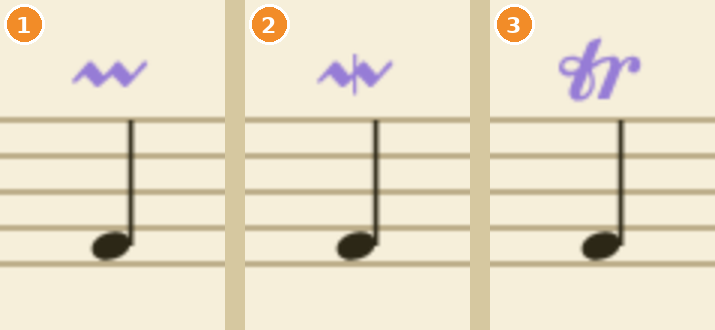
Zo weet je dat het gelukt is: het teken boven de noot verandert, en als je luistert, gaat het notje naar de kant die je koos. Vergist? UNDO maakt het ongedaan.
Tremolo-editor · afgemeten of vrij
Een tremolo zijn streepjes dwars door de stok: de noot wordt heel vaak en snel herhaald. Hoe meer streepjes, hoe sneller de herhalingen.
Om hem te openen: rechtsklik op het teken ①. Druk in het menu dat verschijnt op ✎ TREMOLO EDITOR, de knop met het oranje kader.

- Divisions ②: 1, 2 of 3 streepjes, dat zijn achtsten, zestienden of tweeëndertigsten van de tel. Dat is wat je leest.
- Measure ③: measured speelt precies die herhalingen, als een uitgeschreven herhaling; free herhaalt snel zonder te tellen, zoals het tremolo van de strijkers.

Zo weet je dat het gelukt is: het aantal streepjes op de stok verandert, en als je luistert, herhaalt de noot zich op die snelheid. Vergist? UNDO maakt het ongedaan.
Arpeggio-editor · hoe lang het duurt om zich te ontvouwen
Een arpeggio is de verticale golvende lijn voor een akkoord: de noten klinken niet samen maar na elkaar, heel snel.
Om hem te openen: rechtsklik op het teken ①. Druk in het menu dat verschijnt op ✎ ARPEGGIO EDITOR, de knop met het oranje kader.

- Direction ②: ↑ up begint bij de laagste noot; ↓ down bij de hoogste. De pijl van het teken toont het.
- Spread ③: hoeveel milliseconden er tussen twee noten zitten. Eronder staat het totaal, bijvoorbeeld «3 notes · 90 ms in total». Daar zit het verschil tussen een harparpeggio, traag, en een piano-arpeggio, bijna samen.

Zo weet je dat het gelukt is: de pijl van het teken verandert, en als je luistert, opent het akkoord zich in die richting en op die snelheid. Vergist? UNDO maakt het ongedaan.
Groepsmaatstrepen · de strijkers met één maatstreep verbinden
Rechtsklik op de accolade of haak van de groep, in de marge: het teken licht op wanneer de muis erboven is. Geef de groep een naam en bepaal of de maatstrepen van de ene notenbalk tot de volgende getekend worden, zoals in een orkestpartituur. Voor alle groepen tegelijk is er de schakelaar GROUP in BARS.
De rechtsklikmenu's — elk is het menu van het ding dat je aanraakte, en biedt alleen wat dat ding toelaat.
⠿ Selectie · een traject verplaatsen, kopiëren en herhalen
Rechtsklik binnen een selectie. Het gebruikelijke —kopiëren, knippen, plakken, dupliceren— plus wat echt helpt in een partituur: Replicate herhaalt het traject vooruit, Transpose verplaatst het omhoog of omlaag, Snap to grid zet wat buiten het raster viel recht zonder akkoorden te breken, Re-value verandert de nootwaarden, en Save section as bewaart dat traject als een eigen bestand.
⠿ Kanaal · een heel instrument naar een ander kopiëren
Rechtsklik op de notenbalk. Copy channel en Paste channel nemen het hele kanaal: de noten en ook de articulaties, dynamiek, expressie, agogiek en regio's. Zo bouw je de tweede viool op uit de eerste. Ook de sleutel van het kanaal verander je hier.
⠿ Kanaallabel · dempen, verbergen en Sound FX
Rechtsklik op de kanaalnaam, links van de notenbalk. Geef het kanaal de afkorting die afgedrukt wordt, demp het om de rest te horen, verberg het zodat het geen schermruimte inneemt, en hier opent de Sound FX van dat kanaal.
⠿ Maat · zien wat ze bevat, en haar patroon kopiëren
Rechtsklik op het maatnummer. Het is een leeskaart: welke noten de maat bevat, welke tekens, hoe het pedaal staat. En daaronder het praktische deel: kopieer het patroon van deze maat naar een reeks maten, voor het ostinato of de begeleiding die zich herhaalt.
⠿ Maatstreep · de stilte voordat de muziek verdergaat
Rechtsklik op de maatstreep. Hier komt de adem: de seconden die de muziek bij die maatstreep wacht, zodat de reverb uitsterft vóór het volgende deel. Attacca is adem 0. En je kunt aangeven dat daar een deel begint, met zijn label.
Als de maatstreep binnen de maat staat (de streep die u met BARS › After › Beat hebt gezet), zegt het menu dat — „in M24” — en komt er de rij Beat bij: met − / + verplaatst u ze naar een andere tel, en ✕ Verwijderen haalt ze uit de maat, die dan weer met een enkele maatstreep eindigt. De ademruimte en de systeemovergang blijven.
Als de maatsoort na de maatstreep verandert, voegt het menu de rij Time toe met Visible · Hidden. Hidden drukt de maatsoort niet af en houdt er geen plaats voor vrij, maar de maat behoudt haar lengte: dat dient voor de korte maat die een deel afsluit dat met een opmaat begon (de 1/4-maat van het Rondo alla Turca, vóór de coda). Op het scherm blijft een klein grijs label boven de maatstreep staan; met een rechtermuisklik erop toont u de maatsoort opnieuw.
⠿ Tekst · verbeteren of verplaatsen wat je typte
Rechtsklik op de tekst. Bewerk hem, verander de grootte of wis hem. Om hem te verplaatsen heb je het menu niet nodig: sleep hem gewoon.
⠿ Expressie · hoever het woord reikt
Rechtsklik op het woord. Verander de tekst, geef het een traject of neem het weg, verberg het zonder te wissen. De kaart eronder legt uit welke aanslag het van het instrument vraagt en welke toestand het achterlaat, elk met een eigen ?.
Wat de Status zegt. Wat dit woord vandaag doet, met dit bestand en dit instrument: klinkt (het verandert de klank, de timing of de dynamiek), sluit het vorige stuk af (zoals ord., semplice of naturale: het voegt niets toe, het beëindigt wat ervoor kwam) of klinkt nog niet (het woord is goed geschreven, maar heeft nog geen effect; de dag dat het dat wel heeft, speelt je bestand het zonder iets te veranderen).
Wat de Aanslag is. Hoe de hand de klank maakt. Het woord zegt de bedoeling en elk instrument voert ze op zijn manier uit: cantabile is de aangedrukte vinger op de piano, een trage aanslag op het klavecimbel en de vingertop op de harp. Op de piano verandert de aanslag vooral het kleine mechaniekgeluid dat je net voor de noot hoort. Hij geldt vanaf zijn maat tot het einde van zijn stuk (of tot het volgende woord van hetzelfde instrument), en een teken op de noot wint het. Meer in het lexicon.
⠿ Dynamiek · een f laten klinken zoals jij wilt
Rechtsklik op de aanduiding of op de vork. Het traject, de grootte, en de velocity als die ene f meer of minder moet zijn dan de standaard-f. JOIN verbindt twee opeenvolgende vorken, en de vorkeditor opent van hieruit.
⠿ Articulatie · verplaatsen, verbergen of naar de triller gaan
Rechtsklik op het teken, en het menu wordt op maat gebouwd: niet elke rij verschijnt elke keer. Bovenaan zegt een lila regel op welk teken je staat — het type, het kanaal (of de kanalen, als het verbonden is) en de maat. Bij een pedaal geeft die regel ook waar het binnen de maat valt en, bij een Ped, hoe lang de regio duurt tot het volgende pedaalteken, in tellen en in seconden op het tempo van die maat. Het is de snelle manier om een pedaal te zien dat te lang doorloopt.
Size −/+ verandert het lichaam van het teken in pixels, alleen voor dat ene teken. Daarna komen drie rijen die per teken verschijnen en die geen inkt zijn maar klank: Length (hoeveel van haar waarde de noot klinkt — die achter staccato en portato), Weight (hoe zwaar de aanzet is — die achter de accenten) en Hold (hoe lang ze aanhoudt — die achter fermate en cesuur). Elk begint op de standaardwaarde voor dat teken en wordt hier gecorrigeerd wanneer de passage iets anders vraagt.
Technique verschijnt alleen bij twee strijkerstekens en gaat naar de motor: bij arco is het het contactpunt (norm · tasto · pont · legno) en bij pizz de uitklank (pleno · secco · l.v.). Retake verschijnt alleen bij de streken ⊓ en V, en zegt waar de lucht zit: before betekent dat de stok opnieuw werd aangezet om deze noot te beginnen, after dat hij aan het eind opnieuw wordt aangezet om door te gaan naar de volgende, en de streep wordt getekend aan de kant van de onderbreking. In welke richting de stok gaat, wordt niet geschreven — het streekteken bepaalt dat al.
Heeft het teken een eigen editor, dan is de deur hier: triller, dubbelslag, mordent, tremolo en arpeggio openen hun venster vanuit dit menu. Een piano- of harparpeggio krijgt ook Extend to the staff above en Cut at this staff. Het teken verplaats je door het in beide richtingen te slepen, en de rij JOIN laat één teken voor meerdere kanalen tegelijk gelden.
Het pedaal heeft twee eigen rijen, en hier loont het om goed te kijken. Depth bij een Ped is hoe ver de voet naar beneden gaat: full · 3/4 · 1/2 · 1/4, standaard full — helemaal ingedrukt is de snaar vrij, gedeeltelijk is het vilt dat zonder gewicht rust, wat het lage lichaam wegneemt en de boventonen doorlaat. Bij een ✻ zijn de opties off · 1/4 · 1/2 · 3/4, en hier zit de valkuil: de breuk zegt wat er van het pedaal OVERBLIJFT, niet wat er wordt opgeheven. Alleen off sluit de regio; een gedeeltelijke ✻ laat het pedaal niet los — hij zet de regio voort met minder pedaal, en dat is wat de voet echt doet wanneer de dempers de snaar strelen in plaats van erop te vallen.
Simile verschijnt alleen bij de Ped en is herhaald pedaalgebruik: off (dit teken en niet meer) · to next mark (tot het volgende geschreven teken) · to bar M (tot de maat die je ernaast typt). Wat zich herhaalt, is niet alleen de Ped maar het hele pedaalpatroon van die maat —elke Ped en ✻ erin, met hun diepten— maat per maat afgedrukt; geschreven inkt wint altijd, en aan het eind van het traject laat de motor de voet los met een droge ✻. Vandaar de enige regel die je moet onthouden: als de laatste ✻ van de modelmaat gedeeltelijk is, sluit het pedaal in geen enkele maat van het traject en blijft het van begin tot eind ingedrukt. De Coach waarschuwt wanneer een regio langer dan vier maten open blijft, en de bovenste regel van het menu zegt hoeveel seconden ze duurt. Een verborgen teken pedaleert nog steeds: niet gezien worden haalt het niet uit de motor.
Helemaal onderaan de twee die vergeten worden. Hide marking (sneltoets H) haalt het teken van de pagina zonder zijn effect weg te nemen: het teken blijft in het .mmf-bestand en blijft klinken, wordt op het scherm grijs getekend op 60 % en wordt nooit afgedrukt. Bij een al verborgen teken luidt dezelfde rij Show marking en brengt die het terug als inkt. Let hier op: verborgen tekens zijn alleen zichtbaar —en alleen klikbaar— met SHOW HIDDEN aan, en die schakelaar zit in de pop-up TEMPO, ook al bestuurt hij alle inkt in het stuk. En Delete marking (sneltoets Del) verwijdert het echt; Ctrl+Z maakt dat ongedaan zoals elke andere stap.
⠿ Tempo · een al geplaatst tempo verbeteren
Rechtsklik op de tempoaanduiding. De term, de BPM en het traject. a tempo keert terug naar het vorige tempo, en dat wil je na een rallentando. En je kunt de ♩= verbergen zodat alleen het woord overblijft.
⠿ Asymmetrische regio · de frase die niet op het raster zit
Right-click on the region’s edge or body —on a note, the note editor wins, so look for a gap: just above the top staff line, or the edge itself—. Give it a name, hide it or delete it, and its editor opens from here: this is the phrase where time stretches and shrinks while the grid stays put. With a name, the region is a pattern: Take carries it from bar M to bar M' (repeating every so many bars as it is long) and reports how many copies it made; Hide all and Delete all “name” act on all of them at once. Careful: a hidden region does not play and does not answer the right-click either. To bring it back, put the cursor inside its span and press Alt+H: this same menu opens, with Show region and Show all (the shortcut is in the menu title, in brackets). The edges can be dragged; when you create it from a selection, check the left edge and take it to where the phrase really starts (for example, after a rest). Example: bar 226 holds an Inhale · Extreme region over all the voices and you want it in 227, 230 and 231. Right-click the region, Take 227 to 227 ✓; again, Take 230 to 231 ✓. The bars that should not get it (228–229) are skipped by doing two passes, and where a copy already exists it is not duplicated.
⠿ Systeem · de pagina opruimen voor het afdrukken
Rechtsklik op een systeem, in de pagina- of afdrukweergave. Verschuif het twee millimeter omhoog of omlaag, haal er een maat af of voeg er een toe zodat de regel goed afsluit, en vergrendel het zodat het niet verschuift terwijl je de rest opruimt.
⠿ Sectieteken · het Segno dat bedekt raakte
Rechtsklik op het Segno, de Coda of de Fine op het blad. Grootte, en het verschuift verticaal door te slepen. En van hieruit bewerk je de sectie waartoe het behoort.
⠿ Apply to zone · hetzelfde teken over een hele passage
Het verschijnt na het kiezen van een articulatie: in plaats van het teken noot per noot te plaatsen, kies je de zone en wordt het in één keer op de hele passage toegepast.
En die welke openen vanuit een knop of een sneltoets — die om aan een passage te werken: de loop, het traject, de frase, de effecten.
Int·Beams · een loopje laten klinken als een frase
Rechtsklik op de knop 3·2. Hier bepaal je hoeveel elke noot binnen de gebalkte groep zakt: de geschreven dynamiek is het plafond van de groep en de rest komt evenredig lager. General stelt het in voor het hele stuk; daarna kun je het per reeks maten, per kanaal of per groep aanpassen. 0 is gelijk, 4 is het meest uitgesproken.
Loop · de passage die je verbetert in een lus zetten
Rechtsklik op 🔁 LOOP. Markeer A en B, zet hem aan, en de passage herhaalt zich terwijl je eraan werkt. See the whole piece geeft je het volledige overzicht terug zonder de loop te verliezen.
Navigator · naar maat 74 gaan zonder ze te zoeken
Rechtsklik op de strook van de navigator. Go to measure brengt je naar de maat die je noemt; de zoom brengt je naar de A–B-loop; en je kunt een punt een sectielabel geven (A, B, Coda) om er met één klik naar terug te keren.
Sound FX · reverb en echo in de passage geschreven
Geluidseffecten veranderen hoe een kanaal klinkt: galm (de nagalm van een grote zaal), echo (de noot die zich herhaalt, telkens zachter), porta (naar de noot glijden) en vibrato (de noot die golft).
Om hem te openen: druk op FX ① in de rij van het kanaal, in de lijst ⚙ CHANNELS. Hij opent ook met een rechtsklik op de naam van het kanaal, links van de notenbalk, en dan Sound FX….

- Waar het geschreven wordt ②: This channel (het hele kanaal), This place (de geselecteerde noot) of Selection (het geselecteerde stuk). Een kanaal kan ze alle drie tegelijk hebben.
- De draaiknoppen ③: Reverb (hoeveel zaal) · Echo wet (hoeveel echo erbij komt) · Echo FB (hoeveel herhalingen) · Echo time (de afstand tussen de echo’s, van 80 tot 900 ms; neutraal is 400) · Porta (het glijden naar de noot, tot 400 ms) · Vibrato (de diepte, tot 50 cent). Je draait ze door de muis omhoog of omlaag te slepen; dubbelklikken zet de knop terug op neutraal.
- CLEAN ④ wist het effect van het gekozen gebied. Heeft dat gebied niets, dan wist hij het hele kanaal.
Tip: liever een kort stuk, zelfs één noot. Daar geven echo en galm karakter aan een melodie, en porta het glijden naar de noot. Een effect op het hele stuk is een mengtafel; een effect op één noot is interpretatie.
Zo weet je dat het gelukt is: de knop FX van dat kanaal wordt groen, en als je het stuk met ▶ speelt, hoor je het effect. Terwijl je aan de knop draait, hoor je het nog niet: je hoort het bij het afspelen. Elke draai aan een knop maak je ongedaan met UNDO (Ctrl+Z).
Het effect wordt in het stuk bewaard (het .mmf-bestand). Het Keyboard heeft een eigen knop ⊕ FX, voor wat je live speelt: zie ⊕ FX live. De twee tellen niet op en overschrijven elkaar niet. Meer details in Sound FX per kanaal en per gebied.
Frase-agogiek · de solist ademt en het orkest blijft staan
Vanuit het selectie- of regiomenu. Kies de as —tijd, druk of articulatie—, in welk deel van de frase je zit (inhale, move, arrive, exhale) en hoeveel: subtiel, expressief of extreem. De tekening versleep je met de muis tot de frase klinkt zoals jij haar zingt. Ze heeft een eigen ?.
Noot-AGOG · één enkele noot uitrekken
Knop ← AGOG in de noteneditor. Voor wanneer één noot moet meegeven en niet de hele frase: haar vorm, haar intensiteit en haar grootte.
Sequenties · het ostinato één keer schrijven
Een sequentie herhaalt de toestand van één maat over een heel stuk. Het typische geval is het pedaal: je schrijft hoe je één maat pedaleert en zegt “en zo verder tot maat 61”.

Een sequentie maken:
- Zet de cursor op de maat die als model dient (het patroon), of selecteer het hele stuk.
- Druk op SEQ in de bovenste balk. Het patroon staat al op de maat waar je bent.
- Kies hoe ze herhaalt ②: ⟳ simile of ⧉ written marks.
- Controleer PATTERN, FROM en THROUGH ③ en druk op de knop ④.
- ⟳ simile is een levende regel: hij schrijft geen tekens, de Score herhaalt hem telkens als hij speelt. Hij hangt aan het Ped van de patroonmaat, dus die maat moet pedaal hebben.
- ⧉ written marks schrijft echte tekens in elke maat, die je daarna een voor een kunt bewerken.
Een sequentie verbeteren: klik op haar rij ①. De weergave gaat naar haar maat en haar waarden komen in de vakjes; verander wat je wilt en druk op de knop. Het ✕ wist ze. Alles maak je ongedaan met Ctrl+Z.
Ze opent ook vanuit de selectie: rechtsklik erop → Open sequence…
Zo weet je dat het gelukt is: de sequentie verschijnt in de lijst met haar stuk (bijvoorbeeld M1 → M61), en bij het spelen hoor je ze over het hele stuk.
De volledige uitleg staat in Sequenties: de toestand van één maat, herhaald.
Re-value · de nootwaarden van een passage halveren
Vanuit het selectiemenu. Verandert elke nootwaarde in de selectie van de ene duur naar de andere —achtsten naar zestienden, bijvoorbeeld— zonder dat je de passage opnieuw hoeft te schrijven.
Akkoorden met twee waarden (2026-09-25). Een stuk dat uit MIDI binnenkomt, kan akkoorden bevatten met een kwartnoot tussen achtsten —de stem die werd aangehouden—. RE-VALUE sloeg ze vroeger over („0 re-valued”) omdat het hele akkoord de FROM-waarde moest hebben; nu werkt het op de koppen die FROM zijn en laat het de andere staan, zodat FROM 1/4 → 1/8 het akkoord gelijkmatig maakt. En bij het inkorten schrijft het geen rusten waar al iets klinkt.
Select · de selectieacties, goed in zicht
Rechtsklik op ◻ SELECT. Hetzelfde als het selectiemenu, maar zonder eerst te moeten selecteren: selecteer het hele kanaal of alle kanalen, en van daaruit kopiëren, transponeren, de sectie bewaren, of wissen en het gat sluiten.
Edit section · een al gemaakte herhaling verbeteren
Sinds november 2026 verbeter je een herhaling in Repeats, dezelfde popup die haar maakt: rechtsklik op haar gearceerde zone, op haar maatstreep ‖: of :‖, of op een van haar eindmaten. Zie hoe je haar verbetert.
Edit volta · het huisje dat andere maten bestrijkt
Eindmaten verbeter je samen met hun herhaling, in Repeats: rechtsklik op de haak en ze verschijnen allemaal, elk op een eigen rij — M (van welke maat tot welke maat), Beat (leeg = de hele maat) en Pass (de 1e vinkt doorgang 1 aan; de 2e vinkt last aan, de laatste doorgang).
Werkbereik · jezelf opsluiten in twintig maten
Rechtsklik op de maataanduiding. Geef aan tussen welke maten je werkt, en de rest van het stuk zit je niet meer in de weg. Eén klik wist het als je het hele stuk terug wilt.
Kanaalgroepering · twee fluiten op één notenbalk
De greep ☰ op de kanaalrij, in het kanaalpaneel. Zeg of dat kanaal een eigen notenbalk heeft of er een deelt —twee fluiten op één notenbalk, de strijkers met hun accolade—, geef de groep een naam, en vink aan of het slagwerk is.
Pulse · de metronoom om met de tel erbij te schrijven
De puls is de regelmatige hartslag van de muziek, die je met je voet meetikt. PULSE toont hem met een lampje terwijl je schrijft, zodat je voelt waar elke tel valt.
Om hem te openen: druk op ♩ PULSE ①, rechtsonder.

- Het lampje ②: het knippert op de puls. Elke tel wordt sterker aangegeven dan de onderverdelingen.
- ▶ start ③ zet het aan; dezelfde knop toont ■ stop om het uit te zetten.
- Tempo ④: dat kies je hier niet. Het wordt uit de partituur gelezen, in de maat waar de cursor staat. Om het te veranderen gebruik je TEMPO of de BPM-chip in de onderste balk.
- Subdiv ⑤: het lampje knippert zo vaak per tel als SUBDIV zegt, en ernaast zie je de nootwaarde. Met 4 knippert het in zestienden.
De PULSE van het Score is alleen licht, zonder geluid. Wil je een klik horen, of zelf het tempo kiezen, gebruik dan de pulse van het Keyboard.
Zo weet je dat het gelukt is: het lampje knippert en de knop toont ■ stop. Als je de cursor naar een maat met een ander tempo zet, verandert het lampje van snelheid.
Volgende noot · een appoggiatura schrijven
Knop Gr op de strook. Zet hem op acciaccatura of appoggiatura en de volgende noot die je schrijft, wordt een voorslag; zet hem uit en alles wordt weer normaal.
Tuplet klaarzetten · drie in de tijd van twee
Knop Tu op de strook. Zeg hoeveel noten er gaan in de tijd van hoeveel, of hij een haak en getal draagt, en aan welke kant. Hij werkt ook op een al geschreven selectie, of maakt ongedaan met UNTUPLET.
Vanuit de noteneditor (2026-09-26). De noteneditor (rechtsklik op een noot) heeft een nieuwe rij onder RE-VALUE: ³ TUPLET · open →. Die opent dezelfde pop-up —die ook Numpad *, de Tu van de strook en de ³ TUPLET van DUR openen— naast de noteneditor, waar je hem ziet, en niet langer verborgen achter het klavier. Hoort de noot bij een tuplet, dan opent de pop-up met de waarden van haar groep.
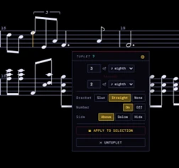
Klein · natuurlijk, harmonisch of melodisch
De knop voor de kleine toonaard. Verandert welke toonladder het trappenklavier gebruikt: natuurlijk, harmonisch met zijn verhoogde septiem, of melodisch.
Het venster van de Coach · waar de uitleg verschijnt
Toets ?, of de 🎓. Dit is het venster waarin lessen, meldingen en de uitleg van elk hulpteken verschijnen. Het blijft vastgezet terwijl je leest, stapelt berichten in plaats van ze te overschrijven, en heeft een eigen lettergrootte.
Vragen bij het bewerken, opgelost.
Vragen die opkwamen bij het bewerken van Mozarts Rondo alla Turca (KV 331, 3e deel), met het antwoord dat werkte. Ze gelden voor elk stuk met dezelfde problemen.
Een maat van 1/4 midden in het stuk
De vraag: de sectie begon met een opmaat en sluit af met een maat van één tel (maat 96 van het Rondo). Hoe schrijft u die zonder volta’s te verzinnen of te hernummeren? Het antwoord: rechtsklik op de vorige maatstreep, en kies in de popup ⠿ Barline, rij Time, voor Hidden. De maatsoort 1/4 wordt niet afgedrukt en neemt geen plaats in, de maat behoudt haar duur en de nummering blijft dezelfde.
De korte triller van drie noten
De vraag: in de maten 23 en 87 staat een „tr” die als si–do–si wordt gespeeld. Met de triller verschijnt een golflijn, het klinkt als een lange triller, en de optie „tr” is er niet. Het antwoord: het is een mordent, geen triller. Plaats een bovenmordent via ART, open hem met een rechtsklik en kies bij Sign voor tr: er wordt „tr” afgedrukt zonder lijn, en hij klinkt hoofdnoot, buurnoot, hoofdnoot. Die optie zit in de mordent-editor; de triller-editor heeft ze niet.
De boog over een groep voorslagen
De vraag: in de linkerhand komt elk akkoord met drie voorslagnootjes (la–do♯–mi, dan la). Van waar tot waar loopt de boog? Het antwoord: van het eerste nootje tot het laatste, zoals in de gedrukte uitgave: gespeeld wordt naar de echte noot toe, maar zo wordt het geschreven. Eén boog per groep; staat er nog een op een nootje in het midden, verwijder die dan.
De voorslagnootjes wat lucht geven
De vraag: de drie nootjes staan dicht op elkaar en de boog is nauwelijks te zien. Het antwoord: Shift + slepen schuift elk nootje naar links zonder de tijd te veranderen. In een gewone maat is weinig genoeg — het eerste iets meer dan het tweede, het derde bijna niets —: te ver uit elkaar en het eerste botst met de achtste noot ervoor. Alleen waar er plaats over is, zoals na een korte maat, kunnen ze verder uit elkaar.
Join verbindt de achtsten van de vorige maat
De vraag: in maat 23 wilde ik een paar achtsten verbinden met Join, en die van maat 22 werden verbonden. Het antwoord: met de Beam editor open en vastgezet, verandert een gewone klik op een noot de groep niet: hij blijft op de vorige gericht. Selecteer de noten met Alt + klik, of open de editor met een rechtsklik op een noot van de maat die u wilt verbinden.
Van een MIDI-bestand naar je kopie, noot voor noot.
De Player opent een .mid (of een .mmf), tekent het op de Score Roll en laat de kopiist elke noot binnen het pythagorese rooster verbeteren voordat het als MMF wordt bewaard. De ?-tekens van de Player brengen je hierheen.
Meerdere bestanden, één werk · de delen
De Player voegt delen op twee manieren samen. Meerdere MIDI-bestanden tegelijk: selecteer ze samen in de bestandsverkenner (of laat ze samen los op de dropzone) en elk bestand komt binnen als een deel van hetzelfde werk, het ene na het andere — zo worden bijvoorbeeld de Sinfonia's van Bach, die als aparte bestanden komen, samengevoegd. De volgorde is de volgorde van de bestandsnamen, met getallen correct gelezen (2 vóór 10): nummer ze zoals je ze wilt laten spelen. Eén MIDI-bestand met meerdere stukken erin — de Roemeense dansen van Bartók, in één enkel bestand —: de Player herkent de lege maat ertussen en houdt die aan als grens tussen de stukken; wanneer het .mmf-bestand in de Score wordt geopend, begint elk stuk na een dubbele maatstreep. Met een werk al geladen voegt nog een MIDI-bestand loslaten het aan het eind toe als een volgend deel, ook nadat je noten met de kopiist hebt verbeterd of het werk vanuit een .mmf hebt geopend: je correcties blijven behouden. Om een deel te verwijderen, klik je er met de rechtermuisknop op. SAVE MMF bewaart alles in één .mmf, met zijn delen; MOVEMENT, boven de rol, toont alleen het deel dat speelt. Een .mmf wordt er niet bij gemengd: als het eerste van de bestanden een .mmf is, opent alleen dat bestand.
Wat de MIDI meedraagt en wat niet · een schone MIDI uit Finale
Een MIDI-bestand slaat op hoe de muziek klinkt, niet hoe ze geschreven is, en de kopiist bouwt daaruit de partituur opnieuw op. Het geschreven tempo komt binnen, ook als het bestand eerst het afspeeltempo van het programma bevat (het laatste wint); naamloze tracks («[Group 2]», «Track 0») krijgen de naam van hun instrument; een noot die het programma opnieuw aanslaat terwijl ze nog klinkt, gaat niet meer verloren. Versieringen worden afgeleid uit de klank: twee voorslagen die naar een noot van een triool leiden, worden als voorslagen geschreven, en in binaire muziek wordt dezelfde figuur als een mordent geschreven, omdat ze hetzelfde klinken. Voor de exacte notatie —versieringen, herhalingen, fermates— open je de MusicXML.
Een schone MIDI uit Finale: zet Human Playback op None vóór het exporteren; als de partituur uit een geïmporteerde MIDI is ontstaan, wis dan de duurwaarden met de MIDI Tool (Duration → Clear), want Finale onthoudt hoe lang elke toets klonk en de geëxporteerde MIDI herhaalt dat; en in de afspeelbalk het eigen tempo van de partituur. De titel: een MIDI-bestand bevat geen titel of componist; als je het werk identificeert met Score Intelligence, vult de werkfiche ze in, en de Score neemt ze mee samen met de tempoaanduiding. Zonder werkfiche draagt het werk de bestandsnaam.
Hoe je de Score Roll leest
De Score Roll is het stuk als tekening: elke noot is een streepje. De tijd loopt van links naar rechts; van onder naar boven gaan de noten van laag naar hoog. En op elk streepje kun je met de muis klikken om te zien welke noot het is en om ze te verbeteren.
Om hem te zien: open de Player met de knop ⊞ player (die staat in de Score, het Keyboard, de Console en het Coach-venster) en laad een .mid of een .mmf in LOAD. De Score Roll tekent het meteen.
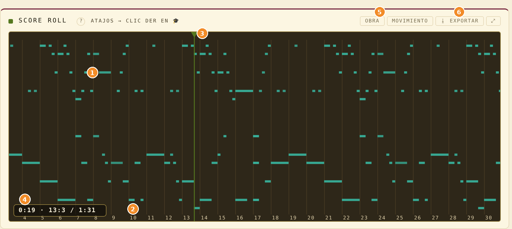
- Een streepje is een noot ①: de lengte is hoe lang ze duurt, de hoogte is de toonhoogte en de kleur is de track (bij piano één hand per kleur). Een herhaalde noot — de achtsten van een begeleiding — verschijnt als een rij streepjes, één per aanslag.
- De verticale lijnen ② zijn de maatstrepen, onderaan genummerd zoals in de partituur. Begint het stuk met een opmaat, dan is die maat maat 0.
- De cursor ③ toont waar de muziek is. Een klik op een lege plek brengt hem daarheen; sleep zijn ▼ om door het stuk te gaan.
- De klok ④ toont de tijd, de maat:tel en de totale duur.
- WERK en DEEL ⑤ kiezen wat je ziet: het hele stuk of één deel. EXPORTEREN ⑥ bewaart een stuk ervan (zie ⭳ export).
De streepjes zijn klein: om er een met de muis aan te klikken, zoom je eerst in met Ctrl + scrollwiel boven de roll (zie Bewegen over de rol).
Zo weet je dat het gelukt is: als je op ▶ drukt, beweegt de cursor en de streepjes die hij kruist zijn de noten die je hoort.
De kopiist · klik op een noot om te zien wat ze is en ze te verbeteren
Een MIDI-bestand bewaart hoe de muziek klonk, niet hoe ze geschreven wordt. De kopiist is het venster dat je zegt welke noot elk streepje is en waarmee je ze kunt verbeteren: haar naam, haar hoogte, hoe lang ze duurt en hoe luid ze klinkt.
Om het te openen: klik op een streepje ① in de Score Roll. Het venster NOOT · CORRECTIE VAN DE KOPIIST gaat open en het streepje krijgt een kader.

- De naam ②: de noot met haar octaaf (D4 is de D net boven de centrale C van de piano). Ernaast haar plaats in het Pythagoreïsche rooster [kwinten, octaven] en haar frequentie in Hz. Eronder: de track, het instrument, wanneer ze klinkt en hoe lang.
- TOONHOOGTE ③: de + gaan omhoog en de − omlaag. T = een hele toon. L = limma, de halve toon die de letter verandert (C → B). A = apotome, de halve toon die de letter houdt en het voorteken toevoegt (D → D♯). K = een komma: de buurnoot op een komma (A♭ +K = G♯).
- OCTAAF ④: −8va en +8va verplaatsen de noot een octaaf omlaag of omhoog.
- SPELLING ⑤: ♯↔♭ wisselt A♯ voor B♭ (of omgekeerd). In de Pythagoreïsche stemming zijn dat twee verschillende noten, een komma uit elkaar: kies degene die de muziek vraagt.
- ♪ beluisteren ⑥ speelt de noot alleen. ✕ verwijderen haalt ze uit de kopie (een MIDI-bestand brengt soms noten te veel mee).
- DUUR ⑦: ÷2 de helft, ×2 het dubbele, −10% en +10% voor fijne aanpassingen. l.v. = laten klinken: de noot wordt niet gedempt.
- VELOCITY ⑧: hoe luid de noot klinkt, van 1 (heel zacht) tot 127 (heel luid).
Om veel noten tegelijk te verbeteren: Shift + slepen over de roll neemt een hele passage en past er hetzelfde op toe. Het venster sluit je met ⊗.
Zo weet je dat het gelukt is: elke wijziging klinkt meteen, de naam wordt bijgewerkt en het woord bewerkt verschijnt. De correctie gaat mee in het MMF als je het bewaart.
Bewegen over de rol
Ctrl + scrollwiel zoomt in of uit rond de cursor. Eenmaal ingezoomd: scrollwiel = op en neer door de toonhoogten · Shift + scrollwiel = vooruit en achteruit in de tijd · de achtergrond slepen = de weergave verplaatsen. Met het hele stuk in beeld kan het wiel nergens heen: zoom eerst in. Dubbelklik op een lege plek om terug te keren naar het hele stuk; WORK en MOVEMENT, bovenaan, kiezen wat er getoond wordt. Een klik op een lege plek verplaatst de cursor daarheen; sleep de ▼ van de cursor om door het stuk te bladeren.
De A–B-loop · rechtsklik
Rechtsklik op de rol: Set A here en Set B here. Het deel wordt gearceerd en het transport speelt het in een lus. Sleep de vlaggetjes A en B om ze bij te stellen; clear A–B pins verwijdert ze. Om precies op een maatstreep te markeren, zoom je eerst in met Ctrl + scrollwiel.
⭳ export · in delen opslaan
De knop ⭳ export in de kop van de rol opent drie wegen. Export by instrument…: vink de tracks aan die je wilt (bijvoorbeeld maar één hand) en het bereik: Work, Visible range of A–B section (zichtbaar wanneer er A- en B-pinnen zijn). Export selection: de noten die je met Shift + slepen hebt gekozen. Export A–B section: elke track tussen A en B. split voices splitst een polyfoon kanaal in hoge, middelste en lage stemmen. Elke weg downloadt een .mmf.